<!doctype html>
<html lang="en">
<head>
  <meta charset="utf-8">
  <meta name="viewport" content="width=device-width, initial-scale=1">
  <title>arxiv digest — 2026-07-16</title>
  <style>
:root {
  --bg: #ffffff;
  --fg: #1f2328;
  --muted: #59636e;
  --border: #d0d7de;
  --card: #f6f8fa;
  --link: #0969da;
}
body {
  max-width: 980px;
  margin: 0 auto;
  padding: 2rem 1rem 5rem;
  font-family: -apple-system, BlinkMacSystemFont, "Segoe UI", Helvetica, Arial, sans-serif;
  line-height: 1.55;
  color: var(--fg);
  background: var(--bg);
}
a { color: var(--link); }
img { max-width: 100%; height: auto; }
pre, code { background: var(--card); border-radius: 6px; }
pre { padding: 1rem; overflow-x: auto; }
blockquote { border-left: 4px solid var(--border); padding-left: 1rem; color: var(--muted); }
details { margin: 0.6rem 0; }
summary { cursor: pointer; font-weight: 600; }
.paper-figures-scroll {
  display: flex;
  gap: 1rem;
  overflow-x: auto;
  overscroll-behavior-x: contain;
  padding: 0.75rem 0.25rem 1rem;
  margin: 1rem 0 1.25rem;
  border-top: 1px solid var(--border);
  border-bottom: 1px solid var(--border);
  scroll-snap-type: x proximity;
}
.paper-figure-card {
  flex: 0 0 min(260px, 72vw);
  scroll-snap-align: start;
  background: var(--card);
  border: 1px solid var(--border);
  border-radius: 12px;
  padding: 0.55rem;
}
.paper-figure-card img {
  display: block;
  width: 100%;
  max-height: 240px;
  object-fit: contain;
  background: white;
  border-radius: 8px;
}
.paper-figure-caption {
  display: block;
  margin-top: 0.5rem;
  color: var(--muted);
  font-size: 0.85rem;
}
.figure-strip-hint {
  color: var(--muted);
  font-size: 0.9rem;
  margin-bottom: -0.3rem;
}
</style>
  <!-- MathJax: renders $...$ inline math and $$...$$ display math, plus
       \(...\) and \[...\]. Loaded from the official CDN; works offline
       once cached. Configured to skip code/pre blocks so arxiv IDs that
       look like dollar amounts don't get mangled. -->
  <script>
    window.MathJax = {
      tex: {
        inlineMath: [['$', '$'], ['\\(', '\\)']],
        displayMath: [['$$', '$$'], ['\\[', '\\]']],
        processEscapes: true,
        processEnvironments: true
      },
      options: {
        skipHtmlTags: ['script', 'noscript', 'style', 'textarea', 'pre', 'code'],
        ignoreHtmlClass: 'tex2jax_ignore',
        processHtmlClass: 'tex2jax_process'
      }
    };
  </script>
  <script id="MathJax-script" async
    src="https://cdn.jsdelivr.net/npm/mathjax@3/es5/tex-chtml.js"></script>
</head>
<body>
<header style="background-color: #333; color: white; padding: 15px; margin-bottom: 20px;">
  <h1 style="margin: 0; font-size: 24px;">
    <a href="https://ochelpan.github.io/arXiv_clean/" style="color: white; text-decoration: none;">Main</a>
  </h1>
</header>

<h1>Daily arXiv Report</h1>

<hr>
<p>
<a href="index.html">← Index</a>
 · <a href="papers_01.html">← Previous</a> · <a href="papers_03.html">Next →</a>
</p>
<hr>

<h2>Papers 21–40</h2>
<p><a id="paper-2607.12766"></a></p>
<h3 id="entropy-driven-initiation-and-cellular-uptake-mediated-by-viscoelastic-cytoskeleton-a-kinetic-phase-diagram-from-onsager-variational-principle"><a href="http://arxiv.org/abs/2607.12766v1">Entropy-Driven Initiation and Cellular Uptake Mediated by Viscoelastic Cytoskeleton: A Kinetic Phase Diagram from Onsager Variational Principle</a></h3>
<p><strong>Authors:</strong> Jinjie Liu, Zhong-Can Ou-Yang, Hao Wu<br>
<strong>Type:</strong> theory · <strong>Category:</strong> statistical mechanics · <strong>PDF:</strong> <a href="https://arxiv.org/pdf/2607.12766v1">https://arxiv.org/pdf/2607.12766v1</a><br>
<strong>Analysis basis:</strong> full PDF text, analyzed in chunks
<strong>Topic relevance:</strong> 🔥 <code>Keldysh / 2PI / non-Gaussian methods</code> <strong>4/5</strong> · <code>driven-dissipative phase transition</code> <strong>3/5</strong> · <code>methods for driven-dissipative</code> <strong>3/5</strong> · <code>non-equilibrium dynamics</code> <strong>3/5</strong> · <code>correlated / nonlocal dissipation</code> <strong>2/5</strong> · <code>non-equilibrium universality</code> <strong>2/5</strong> · <code>Frenkel-Kontorova</code> <strong>1/5</strong></p>
<div class="figure-strip-hint">↔ Scroll figures horizontally</div>
<div class="paper-figures-scroll">
<figure class="paper-figure-card">
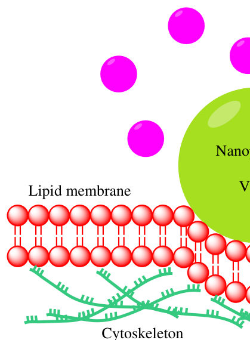
<figcaption class="paper-figure-caption"><b>Fig 1.</b> FIG. 1: Schematic illustration of depletion-driven engulfment. Macromolecules (pink</figcaption>
</figure>
<figure class="paper-figure-card">
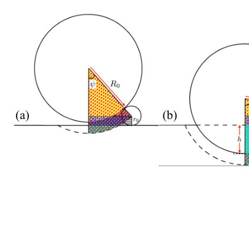
<figcaption class="paper-figure-caption"><b>Fig 2.</b> FIG. 2: Two-phase engulfment model. (a) Phase 1: Depletion-driven approach until</figcaption>
</figure>
<figure class="paper-figure-card">
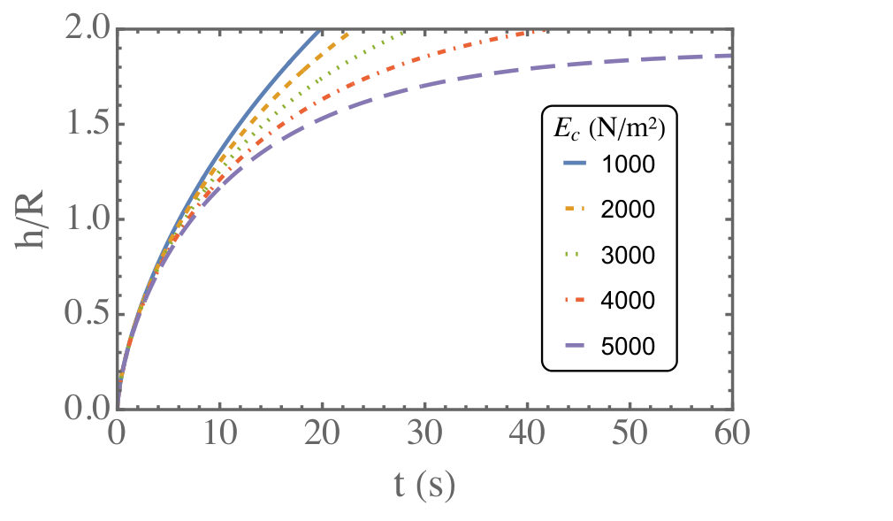
<figcaption class="paper-figure-caption"><b>Fig 3.</b> FIG. 3: Relative engulfment depth h/R as a function of creep time t for different host cell</figcaption>
</figure>
<figure class="paper-figure-card">

<figcaption class="paper-figure-caption"><b>Fig 4.</b> Figure 3 displays the engulfment depth h(t) as a function of time for different host cell</figcaption>
</figure>
<figure class="paper-figure-card">
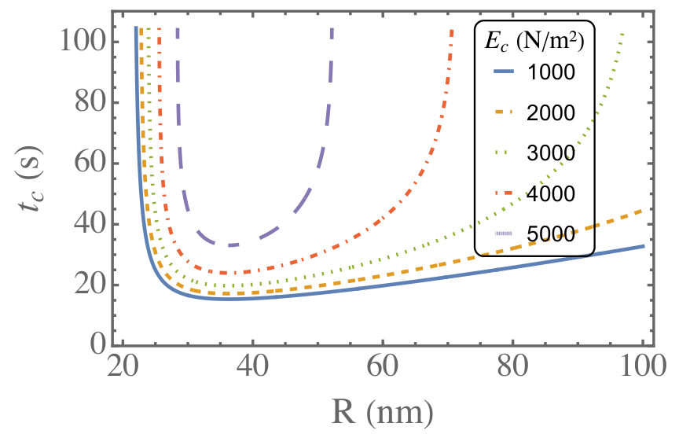
<figcaption class="paper-figure-caption"><b>Fig 5.</b> FIG. 4: Complete engulfment time tc as a function of virus radius R for different host cell</figcaption>
</figure>
</div>

<p><strong>Summary.</strong> This work develops a comprehensive continuum model using the Onsager variational principle to explain cellular engulfment. It uniquely posits that entropic depletion forces provide the necessary initial 'push' before specific receptor binding sustains the process. The resulting kinetic phase diagram offers quantitative predictions for successful viral uptake, linking fundamental physics principles to virology and nanomedicine.</p>
<p><strong>Why it may be interesting.</strong> While focused on biophysics, the rigorous application of variational principles (Onsager) to couple multiple dissipative/restoring forces (viscoelasticity, entropy) provides a powerful theoretical template for analyzing non-equilibrium dynamics in complex soft matter systems relevant to AMO physics.</p>
<details>
<summary>Detailed structure</summary>
<p><strong>Main problem.</strong> The paper addresses the fundamental, unanswered question of the initial driving force required for ligands and receptors to approach each other during receptor-mediated endocytosis.</p>
<p><strong>Main result.</strong> It predicts a kinetic phase diagram defining critical biomolecule concentrations and optimal particle sizes (e.g., 30–60 nm) necessary for successful cellular engulfment.</p>
<p><strong>Method.</strong> The authors develop a unified continuum model rooted in the Onsager variational principle to derive the kinetics from a total free energy landscape incorporating multiple physical contributions.</p>
<p><strong>Model / system.</strong> The system models viral or nanoparticle uptake by a cell membrane, treating the process as having distinct phases: initial entropy-driven approach (depletion forces), followed by sustained binding and viscoelastic cytoskeletal deformation.</p>
<p><strong>Key observables.</strong> Kinetic phase diagram, critical biomolecule concentration ($c_{crit}$), optimal virus radius ($R_{opt}$), and engulfment time $t(h)$.</p>
<p><strong>Important parameters / regimes.</strong> Membrane tension ($\gamma$), Young's moduli ($E_v, E_m$), viscosity coefficients ($\mu, \eta_m$), and biomolecule concentration ($c$).</p>
<p><strong>Assumptions / limitations.</strong> The model assumes the use of the Onsager variational principle for dynamics, employs the Helfrich-Canham Hamiltonian for membrane bending, and models cytoskeleton viscoelasticity using a linear solid approximation.</p>
<p><strong>Figures summary.</strong> Figures illustrate depletion-driven engulfment mechanisms, showing how entropic forces stabilize uptake mediated by the cytoskeleton across different stages of contact.</p>
<p><strong>Paper structure.</strong> The paper builds from identifying the initiation problem to developing a unified free energy functional (summing entropy, binding, membrane, and cytoskeleton terms). It then applies the Onsager principle to derive the kinetic equation, culminating in phase diagram predictions and size optimization criteria.</p>
</details>
<details>
<summary>Abstract</summary>
<p>A fundamental question in receptor-mediated endocytosis remains unanswered: what initial driving force brings ligands and receptors into close proximity? While previous models assume pre-existing contact and overlook this initiation problem, we propose that entropic forces from nanoscale biomolecules in crowded cellular environments provide the essential driving mechanism. We develop a unified continuum model rooted in the Onsager variational principle, where engulfment depth serves as the generalized coordinate and the driving force derives from a free energy landscape of entropic, binding, membrane, and cytoskeleton contributions. The framework naturally incorporates: (i) entropy-driven adhesion as initiation; (ii) ligand-receptor binding as the sustaining force; (iii) membrane deformation via the Helfrich-Canham Hamiltonian; and (iv) cytoskeleton viscoelasticity through the elastic-viscoelastic correspondence principle. The kinetic phase diagram predicts a critical biomolecule concentration for initiation, a lower bound of ligand density for complete engulfment, a finite size window for engulfable particles, and an optimal virus radius of 30--60 nm that decreases with increasing binding energy. The Onsager solubility condition naturally yields the phase boundaries. The model exhibits asymptotic consistency with the classic Asakura-Oosawa result in the large-particle flat-surface limit. Stiffer cells lead to longer engulfment times and narrower size windows. Strikingly, the optimal size matches HIV-1 dimensions under physiologically realistic parameters. This work provides a variational foundation for cellular uptake with implications for virology, nanotechnology, and drug delivery.</p>
</details>
<p><sub><a href="#top">↑ back to top</a></sub></p>

<p><a id="paper-2607.12795"></a></p>
<h3 id="semi-open-boundary-for-random-walking-shocks"><a href="http://arxiv.org/abs/2607.12795v1">Semi-open boundary for random walking shocks</a></h3>
<p><strong>Authors:</strong> Márton Balázs<br>
<strong>Type:</strong> theory · <strong>Category:</strong> statistical mechanics · <strong>PDF:</strong> <a href="https://arxiv.org/pdf/2607.12795v1">https://arxiv.org/pdf/2607.12795v1</a><br>
<strong>Analysis basis:</strong> full PDF text, analyzed in chunks
<strong>Topic relevance:</strong> 🔥 <code>methods for driven-dissipative</code> <strong>4/5</strong> · 🔥 <code>non-equilibrium dynamics</code> <strong>4/5</strong> · <code>driven-dissipative phase transition</code> <strong>3/5</strong> · <code>non-equilibrium universality</code> <strong>3/5</strong> · <code>Frenkel-Kontorova</code> <strong>1/5</strong> · <code>Keldysh / 2PI / non-Gaussian methods</code> <strong>1/5</strong> · <code>analog quantum simulation</code> <strong>1/5</strong> · <code>correlated / nonlocal dissipation</code> <strong>1/5</strong></p>
<div class="figure-strip-hint">↔ Scroll figures horizontally</div>
<div class="paper-figures-scroll">
<figure class="paper-figure-card">
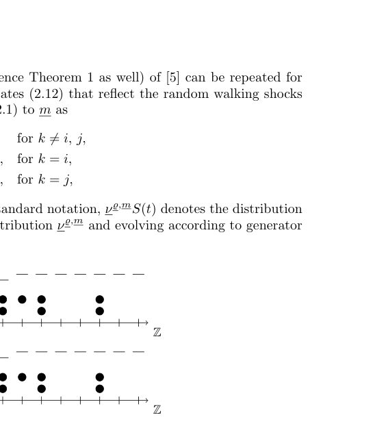
<figcaption class="paper-figure-caption"><b>Fig 1.</b> Figure 1: Right step of an ASEP second class particle with the change in density that follows</figcaption>
</figure>
<figure class="paper-figure-card">
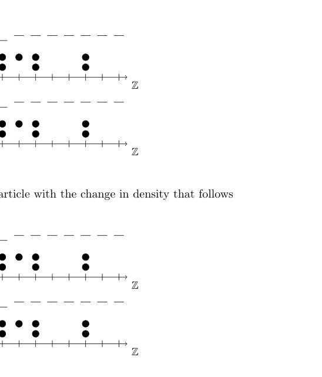
<figcaption class="paper-figure-caption"><b>Fig 2.</b> Figure 2: Left step of an ASEP second class particle with the change in density that follows</figcaption>
</figure>
</div>

<p><strong>Summary.</strong> This paper analyzes how to maintain the complex 'random walking shock' structure of interacting particle models like ASEP within a finite volume by engineering specific boundary conditions. By deriving necessary constraints on these boundary rates, the authors characterize non-trivial stationary distributions for systems exhibiting non-equilibrium dynamics.</p>
<p><strong>Why it may be interesting.</strong> This work provides rigorous mathematical tools for handling non-equilibrium steady states in interacting particle systems, which is foundational knowledge for understanding driven quantum many-body systems or open quantum dynamics where boundaries play a critical role.</p>
<details>
<summary>Detailed structure</summary>
<p><strong>Main problem.</strong> The research aims to find boundary mechanisms for interacting particle systems that preserve a 'random walking shock' structure within a finite volume, while allowing ordinary particles to pass freely but reflecting the shocks.</p>
<p><strong>Main result.</strong> The authors successfully identify semi-open boundary conditions that confine the random walking shocks and allow for the characterization of non-trivial two-species, non-reversible stationary distributions in finite volumes.</p>
<p><strong>Method.</strong> The analysis involves extending known infinite volume results to finite volumes by defining specific boundary jump rates ($p_0, q_0, p_K, q_K$) that maintain conservation laws related to 'second-class particles.'</p>
<p><strong>Model / system.</strong> The study focuses on one-dimensional interacting particle systems, including the Asymmetric Simple Exclusion Process (ASEP) and a generalized Bricklayers process (BLP), modeled by coupled dynamics of particle occupations ($\omega_i$) and second-class particles ($\zeta_i$).</p>
<p><strong>Key observables.</strong> Stationary distributions $
u_{\varrho, m}$ for the coupled pair $(\omega, \zeta)$, hydrodynamic flux/velocity, and the conservation of the sum of second-class particles.</p>
<p><strong>Important parameters / regimes.</strong> Boundary rates ($p_0, q_0, p_K, q_K$), system size $K$, and parameters governing asymmetry (e.g., $p, q$).</p>
<p><strong>Assumptions / limitations.</strong> The boundary mechanism must be open for first-class particles but reflective for second-class particles to maintain conservation laws; the analysis relies on treating $\varphi$ as an arbitrary cylinder function.</p>
<p><strong>Paper structure.</strong> The paper systematically extends infinite volume results by defining boundary generators ($L_{	ext{bry}}$) and deriving necessary identities (setting $E[L\varphi]=0$) that constrain the boundary rates for both ASEP and BLP to ensure stationary states.</p>
</details>
<details>
<summary>Abstract</summary>
<p>Non-stationary time evolution of interacting particle systems is in general a rather difficult topic however, exceptional examples are known where hidden processes within the model make the description manageable. These hidden processes often take the form of a finite number of interacting random walks and in some cases, rather than being hidden, were very explicitly revealed as second class particles associated with the model. The examples of asymmetric exclusion and exponential bricklayers model are known in this context, where such distributional structure was demonstrated in infinite volume. Here we find boundary mechanisms that save this remarkable structure in finite volume of the model with semi-open boundaries that let ordinary particles, but not the shocks, through. This finding also allows to characterise nontrivial two-species, non-reversible stationary distributions subject to our special boundary rates.</p>
</details>
<p><sub><a href="#top">↑ back to top</a></sub></p>

<p><a id="paper-2607.12164"></a></p>
<h3 id="axion-like-particles-multi-parameter-sensing"><a href="http://arxiv.org/abs/2607.12164v1">Axion like particles multi-parameter sensing</a></h3>
<p><strong>Authors:</strong> Hassan Manshouri, Moslem Zarei, Mehdi Abdi<br>
<strong>Type:</strong> theory · <strong>Category:</strong> other · <strong>PDF:</strong> <a href="https://arxiv.org/pdf/2607.12164v1">https://arxiv.org/pdf/2607.12164v1</a><br>
<strong>Analysis basis:</strong> full PDF text, analyzed in chunks
<strong>Topic relevance:</strong> 🔥 <code>analog quantum simulation</code> <strong>4/5</strong> · <code>exotic spin models in light-matter</code> <strong>3/5</strong> · <code>quantum measurements</code> <strong>2/5</strong> · <code>spintronics-quantum-optics interface</code> <strong>2/5</strong> · <code>Keldysh / 2PI / non-Gaussian methods</code> <strong>1/5</strong> · <code>correlated / nonlocal dissipation</code> <strong>1/5</strong> · <code>driven-dissipative phase transition</code> <strong>1/5</strong> · <code>entanglement &amp; information structure</code> <strong>1/5</strong> · <code>methods for driven-dissipative</code> <strong>1/5</strong> · <code>non-equilibrium dynamics</code> <strong>1/5</strong></p>
<div class="figure-strip-hint">↔ Scroll figures horizontally</div>
<div class="paper-figures-scroll">
<figure class="paper-figure-card">
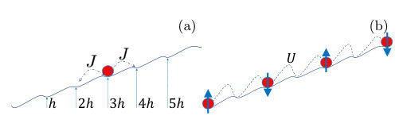
<figcaption class="paper-figure-caption"><b>Fig 1.</b> FIG. 1. (a) Schematic of the lattice with tunneling rate J (dashed line) and gradient field h. (b) Half-filling configura- tion of probe spins, |... ↑0 ↓0...⟩. Dashed line is the on-site interaction strength U between spins.</figcaption>
</figure>
<figure class="paper-figure-card">
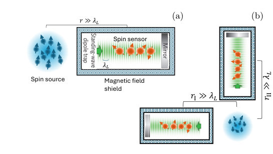
<figcaption class="paper-figure-caption"><b>Fig 2.</b> FIG. 2. Schematic of sensing multi-parameter gradient field induced by axion. (a) Spins of source (blue spins) interact- ing with spins of sensor (orange) through exotic pseudoscalar spin-spin interaction. (b) Spin-source is positioned between two orthogonal probes to sense multi-parameters of axion field, ge pgn p and ma. The spin-source is positioned from the spin sensors by rI = rII = r .</figcaption>
</figure>
<figure class="paper-figure-card">
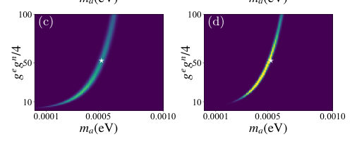
<figcaption class="paper-figure-caption"><b>Fig 3.</b> FIG. 3. Posterior probability distribution P((gegn, m)|nk) of two unknown parameters (gegn, ma) for system size L = 8 with the half-filled particle numbers. For the single probe shown in Fig. 2(a), P((gegn, m)|nk) is plotted with the num- ber of measurement: (a) M = 50, and (b) M=200. The corresponding P((gegn, m)|nk) of the two orthogonal probes configuration, shown in Fig. 2(b)(multi-probes), with the number of measurement: (c) M = 50, and (d) M = 200 is plotted. The star displays the true value of parameters, ge pgn p /4 = 50 and ma = 5×10−4eV. Colors show the ampli- tude of the probability. In all plots J = 4.13 × 10−13 eV (100 Hz) , U = |J|, and n = 1019 is the number of spin source...</figcaption>
</figure>
<figure class="paper-figure-card">
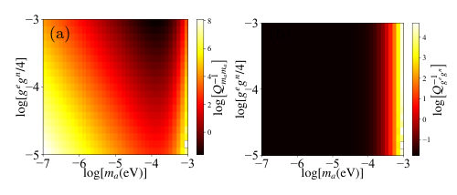
<figcaption class="paper-figure-caption"><b>Fig 4.</b> FIG. 4. (a)The simultaneous estimation of the QFIM inverse elements for the system size L = 8 with the half-filled par- ticle numbers. For different values of axion mass ma and pseudoscalar couplings ge pgn p in the logarithmic values, the corresponding inverse of the QFIM elements (a) Q−1 mama and (b) Q−1 gegn are plotted. In all plots, the tunneling rate is fixed to J = 4.13 × 10−13 eV (100 Hz) , the repulsive on-site inter- action is |U| = J, and n = 1019.</figcaption>
</figure>
<figure class="paper-figure-card">
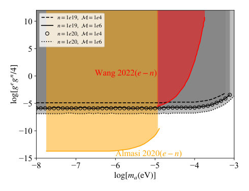
<figcaption class="paper-figure-caption"><b>Fig 5.</b> FIG. 5. The exclusion region of axion mass and couplings under the simulation of axion multi-probes using simultane- ous estimation bounded by the Cram´er Rao bound with the confidence level CL= 95% . The multi-probes have been sim- ulated with sensor system size L=100 with the number of measurement repetitions M=104 and M=106 . The num- ber of polarized spin source of 3He is n [48] with the distance r = 1cm from the sensor. The result of this work (black line) is compared with the current laboratory constraints on the exotic pseudoscalar interaction ge pgn p between the studied particles pairs, such as [43](red line) and [44] (orange line).</figcaption>
</figure>
</div>

<p><strong>Summary.</strong> The paper proposes using trapped fermionic atoms as ultra-sensitive quantum sensors to search for Axion Like Particles via their spin-dependent interactions. It develops a sophisticated multi-probe measurement technique that overcomes theoretical limitations in parameter estimation. This method allows setting stringent new upper bounds on the APL coupling constants, advancing dark matter searches.</p>
<p><strong>Why it may be interesting.</strong> This work directly applies advanced concepts from quantum metrology (QFIM, CRB) to a physical system involving ultracold atoms in optical lattices, making it highly relevant for AMO physicists studying precision sensing.</p>
<details>
<summary>Detailed structure</summary>
<p><strong>Main problem.</strong> The primary goal is to constrain the unknown mass ($m_a$) and coupling constants ($g_e g_n$) of Axion Like Particles (APLs) by detecting exotic pseudoscalar spin-spin interactions.</p>
<p><strong>Main result.</strong> By employing a multi-probe detection strategy, the authors successfully circumvent the singularity in the Quantum Fisher Information Matrix, achieving exclusion limits down to $10^{-7}$ for coupling constants when $m_a \le 10^{-3} 	ext{ eV}$.</p>
<p><strong>Method.</strong> The analysis uses quantum metrology principles, specifically calculating the ultimate sensitivity limit via the inverse of the Quantum Fisher Information Matrix (QFIM) derived from multi-probe measurements.</p>
<p><strong>Model / system.</strong> The system involves fermionic atoms trapped in an optical lattice, whose spin interactions are mediated by APLs. The physics is modeled using a Fermi-Hubbard Hamiltonian incorporating axion-mediated background fields ($h_{\perp}, h_{\parallel}$).</p>
<p><strong>Key observables.</strong> Observed particle counts ($\{n_k\}$) from the sensor spins interacting with the source spins.</p>
<p><strong>Important parameters / regimes.</strong> Axion mass ($m_a$), coupling constants ($g_e g_n$), lattice tunneling rate ($J$), and on-site interaction ($U$).</p>
<p><strong>Assumptions / limitations.</strong> The key methodological assumption is that using multiple, orthogonally positioned probes resolves the singularity inherent in estimating multiple parameters from a single observable.</p>
<p><strong>Figures summary.</strong> Figures illustrate the schematic setup involving source/sensor spins (Fig. 2) and demonstrate how multi-probe measurements resolve singularities in posterior probability distributions compared to single-probe analysis (Fig. 3).</p>
<p><strong>Paper structure.</strong> The paper establishes the physical interaction via a Yukawa potential, models the system using a Fermi-Hubbard Hamiltonian, develops the quantum estimation theory framework using QFIMs, and finally proposes and analyzes the multi-probe detection strategy to achieve parameter constraints.</p>
</details>
<details>
<summary>Abstract</summary>
<p>The search for the axion like particles (APLs)-one of the deepest puzzles in modern cosmology-may hold the key to understanding dark matter and dark energy. In this work, we introduce a setup taking advantage of the quantum metrology techniques to constrain the hypothetical mass and coupling constants of APLs by employing exotic pseudoscalar spin-spin interactions between fermions mediated by ALPs. A key advantage of our approach is the exploitation of position-dependent spin sensor results to the high sensitivity of the probe. To simultaneously investigate the axion mass and coupling constants, we invoke a multi-probe detection strategy. Through this strategy, we circumvent the singularity of the quantum Fisher information matrix as an ultimate upper bound on the sensitivity of any probe. For the axion masses in the range of $m_a {\le} 10^{-3} \text{eV}$, this setup can exclude values of axion coupling constants $g^e_pg^n_p$ down to $10^{-7}$.</p>
</details>
<p><sub><a href="#top">↑ back to top</a></sub></p>

<p><a id="paper-2607.12565"></a></p>
<h3 id="fast-measurement-based-generation-of-large-scale-greenberger-horne-zeilinger-state-with-atomic-nuclear-spin-qubits"><a href="http://arxiv.org/abs/2607.12565v1">Fast measurement-based generation of large-scale Greenberger-Horne-Zeilinger state with atomic nuclear-spin qubits</a></h3>
<p><strong>Authors:</strong> Yan Lu, Xiao-Feng Shi<br>
<strong>Type:</strong> theory · <strong>Category:</strong> other · <strong>PDF:</strong> <a href="https://arxiv.org/pdf/2607.12565v1">https://arxiv.org/pdf/2607.12565v1</a><br>
<strong>Analysis basis:</strong> full PDF text, analyzed in chunks
<strong>Topic relevance:</strong> 🔥 <code>Rydberg arrays</code> <strong>4/5</strong> · <code>quantum measurements</code> <strong>3/5</strong> · <code>analog quantum simulation</code> <strong>2/5</strong> · <code>entanglement &amp; information structure</code> <strong>2/5</strong> · <code>measurement-induced transitions</code> <strong>2/5</strong> · <code>QC/QI experiment</code> <strong>1/5</strong> · <code>exotic spin models in light-matter</code> <strong>1/5</strong> · <code>spintronics-quantum-optics interface</code> <strong>1/5</strong></p>
<div class="figure-strip-hint">↔ Scroll figures horizontally</div>
<div class="paper-figures-scroll">
<figure class="paper-figure-card">
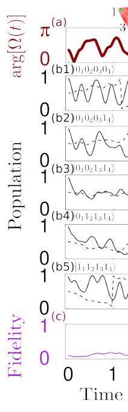
<figcaption class="paper-figure-caption"><b>Fig 1.</b> FIG. 1. (a) Phase of Rydberg Rabi frequency Ω(t) for realizing the 4-qubit QFG with tg = 2.97 × 2π</figcaption>
</figure>
<figure class="paper-figure-card">
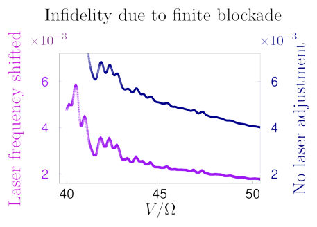
<figcaption class="paper-figure-caption"><b>Fig 2.</b> FIG. 2. The blue curve shows 103(1 −F) as a function of V/Ωby using the pulse profile of Fig. 1, where F is defined in Eq. (B9), and the simulation is with Hamiltonians listed in Appendix C. The purple curve shows 103(1 −F) with ±∆shifted by Ω2/V according to the method of Ref. [27] as detailed at the end of Appendix C. Because the detuning is given by laser frequency deducted by the transition frequency, a frequency shift Ω2/V of the Rydberg laser means change of ±∆to Ω2/V ±∆.</figcaption>
</figure>
<figure class="paper-figure-card">
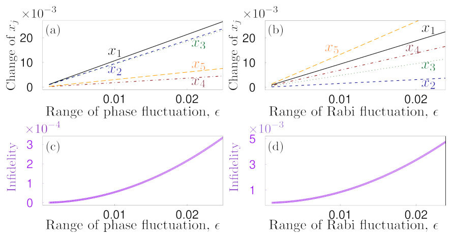
<figcaption class="paper-figure-caption"><b>Fig 3.</b> FIG. 3. Sensitivity of the final accumulated phases xj and the gate fidelity to small phase and amplitude fluctuations in Ω(t). The solid, short-dashed, dotted, dash-dotted, and long dashed curves in (a) and (b) show the fractional error of the angle |(x′ j −xj)/xj| with j = 1, 2, 3, 4, and 5, respectively. A fractional variation δϕ in the phase and variation δΩin the amplitude of Ω(t) are used in (a) and (b), respectively, and the data is an average over results with δϕ and δΩuniformly sampled in [−ϵ, ϵ], respectively. The infidelity due to the fluctuation of phase and amplitude of Ω(t) is shown in (c) and (d), respectively.</figcaption>
</figure>
<figure class="paper-figure-card">
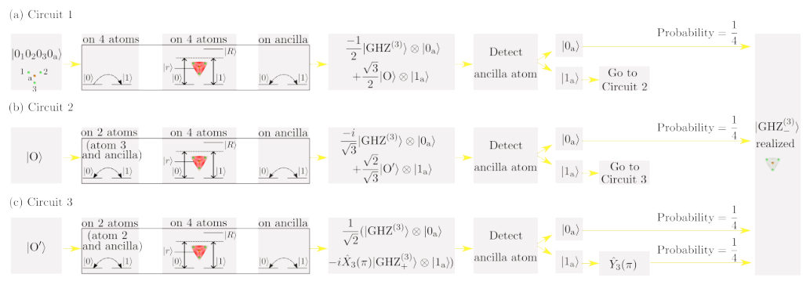
<figcaption class="paper-figure-caption"><b>Fig 4.</b> FIG. 4. Illustration of the elementary gluing cycle via the creation of |GHZ(3) −⟩from a product state of three data atoms, labeled 1, 2, and 3, and one ancillary atom labeled a. The red triangle illustrates the effect of looking through a tetrahedron, in the four vertexes of which the four atoms are trapped. (a) The probability to have the |GHZ(3)⟩created in Circuit 1 is p1−yes = 1/4, and the remaining probability p1−no = 3/4 is to go to Circuit 2. (b) Within Circuit 2, the conditional probability to have the |GHZ(3)⟩created is 1/3, so that the probability to succeed in Circuit 2 is p2−yes = p1−no · (1/3) = 1/4. The probability to go to Circuit 3 is p2−no = p1−no · (2/3) = 1/2. (c) In...</figcaption>
</figure>
<figure class="paper-figure-card">
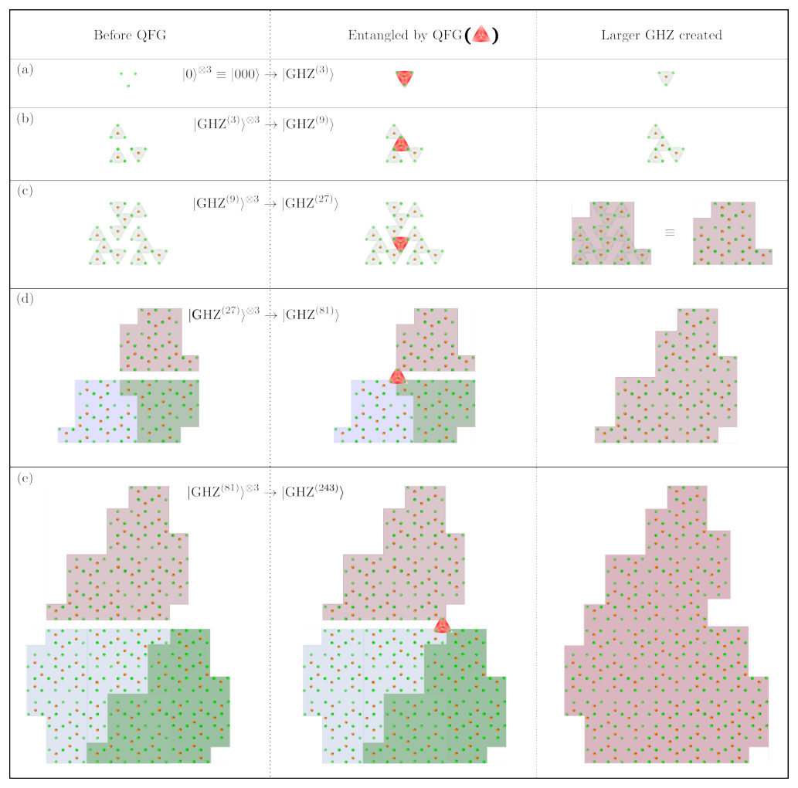
<figcaption class="paper-figure-caption"><b>Fig 5.</b> FIG. 5. Illustration of generating a 243-qubit GHZ state. (a,b,c,d,e) show the gluing from product state to |GHZ(3)⟩, from |GHZ(3)⟩to |GHZ(9)⟩, from |GHZ(9)⟩to |GHZ(27)⟩, from |GHZ(27)⟩to |GHZ(81)⟩, and from |GHZ(81)⟩to |GHZ(243)⟩, respectively. The green and red dots represent the data and ancilla atoms, respectively. In each gluing, the QFG is denoted by the red triangle which represents looking through a tetrahedron where the four atoms in the QFG are the four vortexes.</figcaption>
</figure>
</div>

<p><strong>Summary.</strong> The paper presents a method to rapidly create massive Greenberger-Horne-Zeilinger (GHZ) entangled states using atomic nuclear-spin qubits. It proposes a novel Quantum Ferromagnetic Gate (QFG) realized via Rydberg interactions in alkaline-earth atoms. By iteratively applying this gate through a 'gluing circuit,' the authors demonstrate a scalable pathway toward generating highly entangled quantum resources for quantum technologies.</p>
<p><strong>Why it may be interesting.</strong> This work directly bridges quantum information theory (GHZ states) with advanced AMO physics techniques (Rydberg blockade on nuclear spins), providing a concrete, scalable platform proposal for quantum computation using neutral atoms.</p>
<details>
<summary>Detailed structure</summary>
<p><strong>Main problem.</strong> The primary goal is the fast, high-fidelity generation of large-scale Greenberger-Horne-Zeilinger (GHZ) states.</p>
<p><strong>Main result.</strong> A protocol using a Quantum Ferromagnetic Gate (QFG) and repetitive 'gluing circuits' allows for the theoretical realization of GHZ states up to 243 qubits using nuclear-spin qubits in alkaline-earth atoms.</p>
<p><strong>Method.</strong> The state generation relies on a measurement-based quantum computation approach involving a specific QFG gate, single-qubit rotations, and projective measurements on an ancillary qubit.</p>
<p><strong>Model / system.</strong> The system uses atomic nuclear-spin qubits of alkaline-earth-like atoms trapped in arrays. The interactions are mediated by Rydberg blockade effects, which govern the dynamics described by a complex Hamiltonian involving single-atom and Rydberg interaction terms.</p>
<p><strong>Key observables.</strong> Gate fidelity ($F$), QFG realization time ($6\pi/\Omega_m$), and error sources like Rydberg-state decay and blockade leakage.</p>
<p><strong>Important parameters / regimes.</strong> Rydberg Rabi frequency ($\Omega_m$), detuning ($\Delta$), blockade strength ($V$), and atomic position fluctuations ($\sigma$).</p>
<p><strong>Assumptions / limitations.</strong> The protocol assumes the feasibility of assembling large-scale atomic arrays and relies on approximations for error analysis, such as ignoring states with more than a few Rydberg excitations.</p>
<p><strong>Figures summary.</strong> Figures illustrate state evolution under the QFG mechanism, showing phase profiles and fidelity comparisons between different pulse engineering techniques used to mitigate blockade errors.</p>
<p><strong>Paper structure.</strong> The paper introduces the problem of large-scale GHZ generation, proposes the QFG gate using nuclear spins, details the 'gluing circuit' for scaling, analyzes the underlying Hamiltonian dynamics including Rydberg interactions, and discusses error sources from decay and position fluctuations in appendices.</p>
</details>
<details>
<summary>Abstract</summary>
<p>Large-scale Greenberger-Horne-Zeilinger~(GHZ) state is useful for quantum technologies but difficult to be prepared. Here, we propose fast measurement-based preparation of large-scale GHZ states by a four-qubit quantum phase gate with nuclear-spin qubits of alkaline-earth-like atoms, which is named as quantum ferromagnetic gate~(QFG) due to its analogy to the alignment of molecular magnetic moments in a classical magnet. A high-fidelity Rydberg-mediated QFG can be realized in a time of $6π/Ω_{\text{m}}$ with $Ω_{\text{m}}$ the maximal Rydberg Rabi frequency. From a product state of three data atom and one ancilla atom, a gluing circuit with one QFG, two single-qubit gates, and a projective measurement of the ancilla can generate a 3-qubit GHZ state, and repetition of this gluing circuit can lead to 9, 27, 81, 243, $\cdots$-qubit GHZ states. Analyses based on currently available techniques show that a 243-qubit GHZ state is realizable, and more qubits can be entangled with higher detection fidelity.</p>
</details>
<p><sub><a href="#top">↑ back to top</a></sub></p>

<p><a id="paper-2607.13008"></a></p>
<h3 id="high-fidelity-entanglement-of-polar-molecules-by-dynamic-geometric-control"><a href="http://arxiv.org/abs/2607.13008v1">High-fidelity entanglement of polar molecules by dynamic geometric control</a></h3>
<p><strong>Authors:</strong> Scarlett S. Yu, Avikar Periwal, Jiaqi You, Zirui Liu, Qinshu Lyu, Youngju Cho, Loïc Anderegg, Eunmi Chae, John M. Doyle<br>
<strong>Type:</strong> experiment · <strong>Category:</strong> other · <strong>PDF:</strong> <a href="https://arxiv.org/pdf/2607.13008v1">https://arxiv.org/pdf/2607.13008v1</a><br>
<strong>Analysis basis:</strong> full PDF text, analyzed in chunks
<strong>Topic relevance:</strong> 🔥 <code>analog quantum simulation</code> <strong>4/5</strong> · <code>entanglement &amp; information structure</code> <strong>3/5</strong> · <code>QC/QI experiment</code> <strong>2/5</strong> · <code>non-equilibrium dynamics</code> <strong>2/5</strong> · <code>Rydberg arrays</code> <strong>1/5</strong> · <code>correlated / nonlocal dissipation</code> <strong>1/5</strong> · <code>driven-dissipative phase transition</code> <strong>1/5</strong> · <code>methods for driven-dissipative</code> <strong>1/5</strong> · <code>quantum measurements</code> <strong>1/5</strong></p>
<div class="figure-strip-hint">↔ Scroll figures horizontally</div>
<div class="paper-figures-scroll">
<figure class="paper-figure-card">
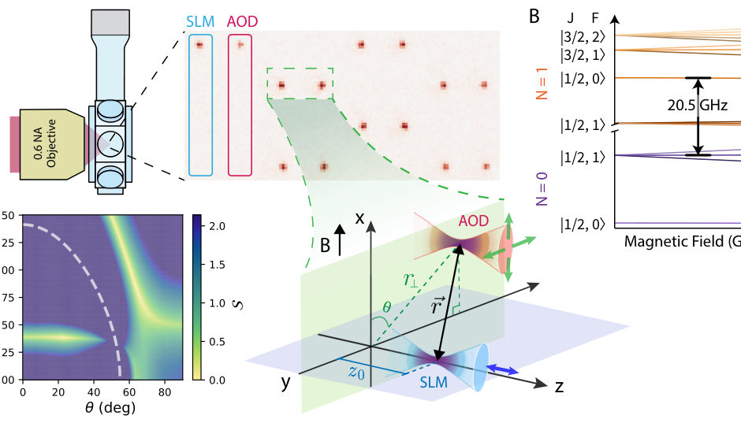
<figcaption class="paper-figure-caption"><b>Fig 1.</b> FIG. 1. Three-dimensional geometric control of dipolar interactions in a molecular tweezer array. (A) Schematic of the optical tweezer array and geometric coordinates used in this work. CaF (calcium monofluoride) molecules are loaded into 775 nm optical tweezers projected through a 0.6 NA microscope objective into a vacuum glass cell. Inset: Geometry and coordinates between one pair of interacting molecules. The tweezer propagation is along ˆz. The relative separation vector between two molecules is ⃗r = ⃗r⊥+ z0ˆz, where ⃗r⊥is the in-plane separation and z0 is their relative axial displacement. The angle θ is defined between ⃗r⊥and the quantization axis, which is set by a small applied...</figcaption>
</figure>
<figure class="paper-figure-card">
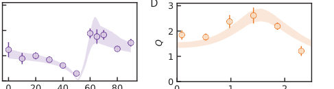
<figcaption class="paper-figure-caption"><b>Fig 2.</b> FIG. 2. Static geometric engineering of dipolar inter- actions. (A) Predicted interaction quality factor Q = |J|τ/h over geometry space parameterized by (θ, z0). The stars mark the geometries used for the dipolar oscillation measurements shown in B, while the horizontal (vertical) dashed lines mark the cuts depicted in C (D). (B) Comparison of dipolar oscil- lations at a reference point (θ, z0) = (90◦, 0) and an optimal configuration (θ∗, z∗ 0) = (70◦, 1.42 µm). Solid lines are fit to a damped dipolar-exchange oscillation; corresponding fitted de- cay times are τ = 40(6) ms and 103(12) ms, respectively. (C) Dipolar interaction quality factor Q as a function of angle θ at z0 = 0. (D) Dipolar...</figcaption>
</figure>
<figure class="paper-figure-card">
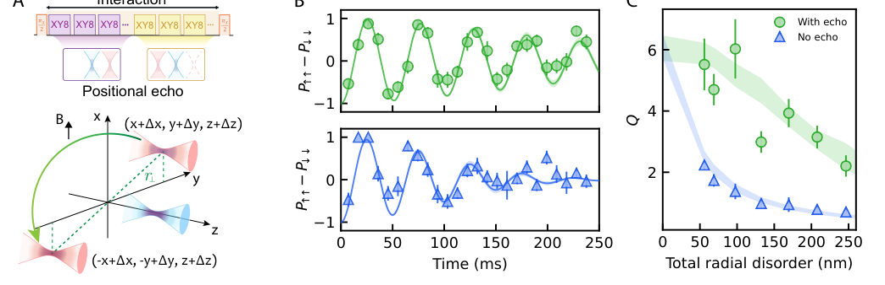
<figcaption class="paper-figure-caption"><b>Fig 3.</b> FIG. 3. Positional Echo Protocol. (A) The interacting pair evolves for equal durations at two geometries, realized by rapidly moving one molecule midway through the interaction duration. The XY8 dynamical decoupling sequence is applied throughout the interaction. (B) Comparison of optimal dipolar oscillations with the motional echo (top, green) and without the motional echo (bottom, blue). (C) We characterize the performance of the echo protocol by injecting additional disorder into the SLM trap position. The total radial disorder is obtained by adding the injected disorder in quadrature with the uncorrected baseline radial disorder (≃50 nm); the first data points correspond to zero...</figcaption>
</figure>
<figure class="paper-figure-card">
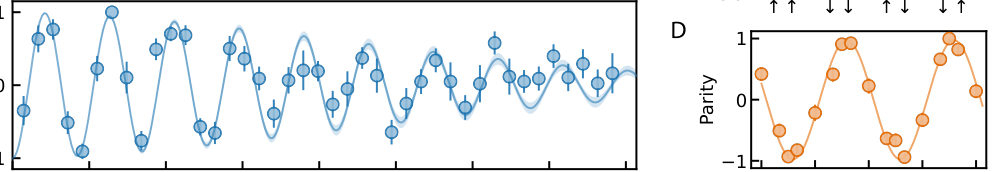
<figcaption class="paper-figure-caption"><b>Fig 4.</b> FIG. 4. Optimal Configuration and Bell state characterization. (A) Illustration of the experimental sequence. Molecules in the SLM and AOD traps are simultaneously Raman-sideband cooled and then moved to the interaction geometry. After the interaction, a π/2 analysis pulse with variable phase ϕ is used for parity measurement, followed by detection of both the |↓⟩and |↑⟩states. (B) A representative oscillation with Q = 7.23(81). (C) Pair population statistics, measured in the computational basis at t = 11.2 ms of dipolar exchange evolution, corresponding to the π/2 point of the two-particle population oscillation. (D) Parity oscillations for a two-particle Bell state measured at the same...</figcaption>
</figure>
</div>

<p><strong>Summary.</strong> The researchers addressed the challenge of decoherence in polar molecule quantum systems caused by thermal motion within optical tweezer arrays. They developed sophisticated control schemes, including geometric engineering and programmable echo sequences, which successfully suppressed sensitivity to positional jitter. These methods enabled the generation of high-fidelity entanglement ($\mathcal{F} \approx 0.976$), pushing the boundaries for molecular quantum information processing.</p>
<p><strong>Why it may be interesting.</strong> This work represents a significant experimental demonstration of active quantum error mitigation using mechanical degrees of freedom. The ability to use controlled molecular motion to refocus environmental noise is highly relevant for building scalable quantum simulators and quantum memories.</p>
<details>
<summary>Detailed structure</summary>
<p><strong>Main problem.</strong> The coherence of quantum interactions between polar molecules trapped in optical tweezers is degraded by thermal motion and positional fluctuations, limiting entanglement fidelity.</p>
<p><strong>Main result.</strong> By employing dynamic geometric control and programmable molecular motion (geometric echo), the authors achieved a high two-molecule Bell state fidelity of $\mathcal{F}= 0.976^{+0.008}_{-0.011}$ in directly laser-cooled molecules.</p>
<p><strong>Method.</strong> The study uses optical tweezer arrays controlled by SLMs and AODs to engineer the dipolar interaction geometry, combined with advanced quantum control techniques like dynamic decoupling and echo protocols.</p>
<p><strong>Model / system.</strong> The system involves polar molecules (e.g., $    ext{CaF}$) trapped in 2D optical tweezers, whose coherent dynamics are governed by a dipolar coupling Hamiltonian $J$. The methodology focuses on minimizing the sensitivity of this interaction to motional states and positional noise.</p>
<p><strong>Key observables.</strong> Entanglement fidelity ($\mathcal{F}$), Dipolar coherence quality factor ($Q$), Single-body coherence time ($ au_{sb}$).</p>
<p><strong>Important parameters / regimes.</strong> Trap position fluctuations (down to 10 nm scale), Geometric parameters ($   heta, z_0$), Molecular temperature/motional occupation ($ar{n}$).</p>
<p><strong>Assumptions / limitations.</strong> The primary limitations are identified as residual axial positional disorder ($\sigma_z$) and the need for complex site-dependent calibrations across the array.</p>
<p><strong>Figures summary.</strong> Figures illustrate the geometry control using SLM/AODs, show how geometric engineering minimizes motional sensitivity ($S$), and demonstrate the improvement in coherence quality factor ($Q$) achieved by implementing echo protocols.</p>
<p><strong>Paper structure.</strong> The paper progresses from identifying thermal motion as the primary decoherence source to proposing static geometric solutions (magic angles), then advancing to dynamic control via programmable molecular motion (echo protocol) to suppress positional noise, culminating in high-fidelity entanglement measurements.</p>
</details>
<details>
<summary>Abstract</summary>
<p>In quantum information systems made of optical tweezer arrays of ultracold molecules, thermal motion of molecules degrades the coherence of their interactions, which limits entanglement fidelity and the concomitant scientific applicability of these systems. We show that by controlling the geometry of the dipolar interaction, even when a molecule occupies many motional states in the tweezer, coherence can be preserved. We characterize several geometries that suppress sensitivity to thermal fluctuations. We further use programmable, coherence-preserving motion of the molecules during entanglement to refocus dephasing from relative positional jitter of the tweezers, which is relevant even on the 10 nm scale. These methods yield substantially improved dipolar coherence and enable generation of two-molecule entanglement with a Bell state fidelity of $\mathcal{F}= 0.976^{+0.008}_{-0.011}$ in directly laser-cooled molecules.</p>
</details>
<p><sub><a href="#top">↑ back to top</a></sub></p>

<p><a id="paper-2607.12096"></a></p>
<h3 id="topological-building-blocks-of-nonequilibrium-response"><a href="http://arxiv.org/abs/2607.12096v1">Topological building blocks of nonequilibrium response</a></h3>
<p><strong>Authors:</strong> Sean Fancher, Jordan Horowitz<br>
<strong>Type:</strong> theory · <strong>Category:</strong> statistical mechanics · <strong>PDF:</strong> <a href="https://arxiv.org/pdf/2607.12096v1">https://arxiv.org/pdf/2607.12096v1</a><br>
<strong>Analysis basis:</strong> full PDF text, analyzed in chunks
<strong>Topic relevance:</strong> 🔥 <code>non-equilibrium dynamics</code> <strong>4/5</strong> · <code>driven-dissipative phase transition</code> <strong>3/5</strong> · <code>methods for driven-dissipative</code> <strong>3/5</strong> · <code>non-equilibrium universality</code> <strong>2/5</strong> · <code>Keldysh / 2PI / non-Gaussian methods</code> <strong>1/5</strong> · <code>analog quantum simulation</code> <strong>1/5</strong> · <code>correlated / nonlocal dissipation</code> <strong>1/5</strong></p>
<div class="figure-strip-hint">↔ Scroll figures horizontally</div>
<div class="paper-figures-scroll">
<figure class="paper-figure-card">
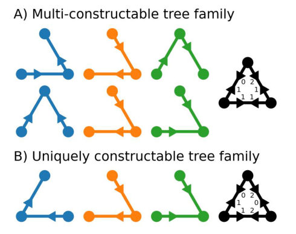
<figcaption class="paper-figure-caption"><b>Fig 1.</b> FIG. 1. Some example tree families of the 3 state graph. A) Two distinct tree families with trees rooted at the top (blue), left (orange), and right (green) states. The number of times each directed edge is used is given by the black graph to the right. Since both sets use the same collection of edges with the same multiplicities, they can each be reconstructed into the other and are thus mulit-constructable. B) Another pos- sible tree family with its edge multiplicities. In this case, no other construction is possible, thus making this set uniquely constructable.</figcaption>
</figure>
<figure class="paper-figure-card">
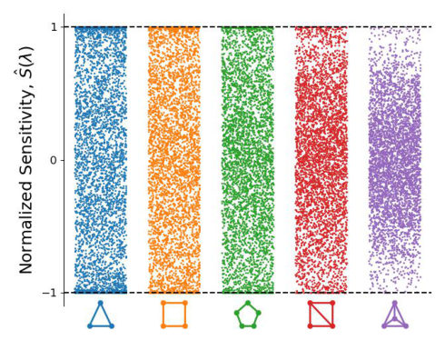
<figcaption class="paper-figure-caption"><b>Fig 2.</b> FIG. 3. Numeric exploration of sensitivity in several ran- domized systems. For each of the depicted networks, values of Q, W, and d are all randomly determined from standard uniform, log-normal, and normal distributions, respectively. The corresponding ∂λ⟨Q⟩, minα⟨⟨QGα⟩⟩, and maxα⟨⟨QGα⟩⟩ are then calculated, and the normalized sensitivity is used so that ˆS(λ) = +1 corresponds to ∂λ⟨Q⟩= maxα⟨⟨QGα⟩⟩and ˆS(λ) = −1 to ∂λ⟨Q⟩= minα⟨⟨QGα⟩⟩. This process of drawing new values of Q, W, and d and recalculating ˆS(λ) is repeated a total of 4096 times for each network. This data shows the validity of the bounds presented in (8).</figcaption>
</figure>
<figure class="paper-figure-card">
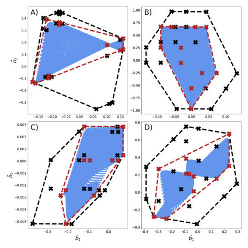
<figcaption class="paper-figure-caption"><b>Fig 3.</b> FIG. 2. Numeric exploration of response in the 3 state graph. The response of this system exists within a 2-dimensional sub- space of the 3-dimensional space defined by ∂λ ln πj. Axes represent an orthonormal basis of this subspace for each pa- rameter set. The position of the tree family vertices (vσ) are given by the × markers with multi-constructable tree families in black and uniquely-constructable ones in red. The convex hulls of these two collections are given by their correspond- ingly colored dashed lines. Blue points provide numerically calculated response values from a sweep over the space of possible rates under fixed π and d values, as described in the Materials and Methods....</figcaption>
</figure>
<figure class="paper-figure-card">
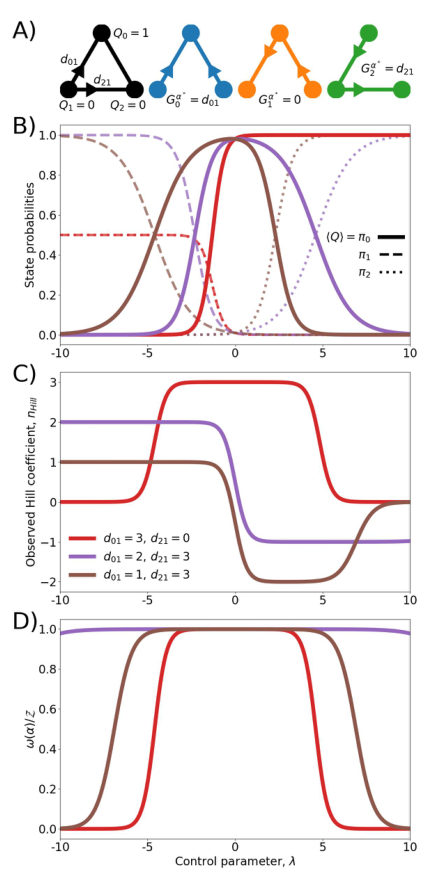
<figcaption class="paper-figure-caption"><b>Fig 4.</b> FIG. 4. A) The three state network with displayed values of Q and d is given base rates W01 = 1, W10 = 10−2, W02 = W21 = 10−6, W12 = 10−12, and W20 = 10−14 so that the depicted uniquely constructable tree family is physically realized. B) The steady state probabilities of each state (and equivalently ⟨Q⟩) showcase the characteristic features of single (red) and double (purple and brown) sided Hill functions. C) The Hill coefficient is calculated via (13) for each system as a function of λ. The values in the transition regions are seen to perfectly match those predicted by (15) with the signs dictating ramp up and ramp down regimes respectively. D) The realization range (L) for each curve is...</figcaption>
</figure>
<figure class="paper-figure-card">
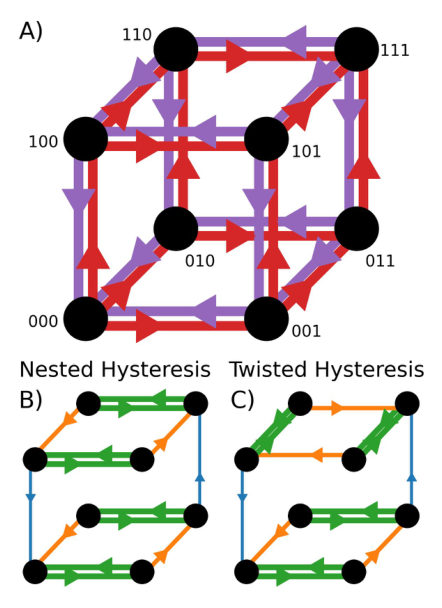
<figcaption class="paper-figure-caption"><b>Fig 5.</b> FIG. 5. The binary triplet model. A) The eight possible binary triplet states with all allowable transitions. Red edges represent binding edges (de = 1) while purple edges represent unbinding edges (de = 0). B) The Nested Hysteresis model. The green left-right edges hold the highest rates, the orange front-back edges are of moderate magnitude, and the blue top-bottom edges have the slowest transitions. This model is capable of achieving maximum sensitivity. C) The Twisted Hysteresis model. Rates are color coded in the same way as (B), but the top portion of the graph has been twisted. This model is also capable of achieving maximum sensitivity. See SI for full breakdown of the corresponding...</figcaption>
</figure>
</div>

<p><strong>Summary.</strong> The paper develops a geometric framework to map the entire space of possible non-equilibrium responses in Markov jump processes. It shows that these responses are constrained by the topology of the underlying state graph via 'uniquely constructable' tree families. This provides powerful, mathematically rigorous bounds for designing systems with specific sensitivity profiles.</p>
<p><strong>Why it may be interesting.</strong> This work provides deep mathematical structure (polytope geometry) to non-equilibrium dynamics, offering rigorous bounds on how systems can respond to external stimuli, which is highly relevant for designing synthetic biological or engineered quantum devices.</p>
<details>
<summary>Detailed structure</summary>
<p><strong>Main problem.</strong> To systematically characterize the full range of possible non-equilibrium response behaviors achievable by a system, moving beyond existing theoretical bounds.</p>
<p><strong>Main result.</strong> The entire space of achievable responses is conjectured to be structured as a polytope whose vertices are determined by 'uniquely-constructable' tree families derived from the graph topology.</p>
<p><strong>Method.</strong> The authors use graph theory (rooted spanning trees) and geometric arguments, showing that physical realizability restricts the response space to a convex combination of contributions from these unique topological structures.</p>
<p><strong>Model / system.</strong> The system is modeled as a continuous-time Markov jump process on a graph G with N nodes. The dynamics are governed by a master equation, and the focus is on calculating the rate sensitivity ($\partial_\lambda \langle Q 
angle$) of steady-state observables to external control parameters $\lambda$.</p>
<p><strong>Key observables.</strong> Steady-state distribution ($\pi_j$), response sensitivity vector components ($\partial_\lambda \ln \pi_j$), and the expected value of an observable $\langle Q 
angle$.</p>
<p><strong>Important parameters / regimes.</strong> The topology of the graph G, kinetic rates $W_{ij}$, and the control parameter $\lambda$ that tunes the rates.</p>
<p><strong>Assumptions / limitations.</strong> The analysis assumes the graph is strongly connected to ensure a unique steady state. Crucially, it distinguishes between 'multi-constructable' (non-physical) and 'uniquely-constructable' tree families.</p>
<p><strong>Figures summary.</strong> Figures illustrate the construction of different types of rooted spanning trees on small graphs (like 3 states), contrasting those that are uniquely constructible (leading to nested or twisted hysteresis motifs) versus those that fail due to structural contradictions.</p>
<p><strong>Paper structure.</strong> The paper progresses from defining the general problem of response characterization, establishing the role of tree families in bounding the response space via convex combinations, and finally applying these topological constraints to specific physical models like molecular binding on a 3-state graph.</p>
</details>
<details>
<summary>Abstract</summary>
<p>Nonequilibrium systems can exploit energy to amplify their sensitivity to external stimuli, allowing them to be harnessed for a variety of functions in both engineered devices and living organisms. An assortment of theoretical results capture different facets of this nonequilibrium amplification, including fluctuation-response relations as well as bounds and constraints that limit the potential behavior. Here, we take a broader perspective, aiming for a systematic characterization of the full range of possible response behaviors. For a wide class of nonequilibrium dynamics, we identify a collection of optimally sensitive models whose behavior is determined by the topology of the state space. We further conjecture that every response can be written as a convex combination of these optimal models, thereby structuring the entire space of responses. We use this geometric perspective to put sensitivity limits on nonmonotonic biochemical input-output functions, and identify all optimal kinetic schemes for the unordered binding of molecules among three sites.</p>
</details>
<p><sub><a href="#top">↑ back to top</a></sub></p>

<p><a id="paper-2607.12913"></a></p>
<h3 id="heisenberg-limited-metrology-in-the-presence-of-non-markovian-noise-with-finite-control-rates"><a href="http://arxiv.org/abs/2607.12913v1">Heisenberg-limited metrology in the presence of non-Markovian noise with finite control rates</a></h3>
<p><strong>Authors:</strong> Shravan Shravan, Tyler G. Thurtell<br>
<strong>Type:</strong> theory · <strong>Category:</strong> quantum information and computing · <strong>PDF:</strong> <a href="https://arxiv.org/pdf/2607.12913v1">https://arxiv.org/pdf/2607.12913v1</a><br>
<strong>Analysis basis:</strong> full PDF text, analyzed in chunks
<strong>Topic relevance:</strong> 🔥 <code>quantum measurements</code> <strong>4/5</strong> · <code>measurement-induced transitions</code> <strong>3/5</strong> · <code>non-equilibrium dynamics</code> <strong>2/5</strong> · <code>correlated / nonlocal dissipation</code> <strong>1/5</strong> · <code>driven-dissipative phase transition</code> <strong>1/5</strong> · <code>entanglement &amp; information structure</code> <strong>1/5</strong> · <code>methods for driven-dissipative</code> <strong>1/5</strong> · <code>non-equilibrium universality</code> <strong>1/5</strong></p>
<div class="figure-strip-hint">↔ Scroll figures horizontally</div>
<div class="paper-figures-scroll">
<figure class="paper-figure-card">
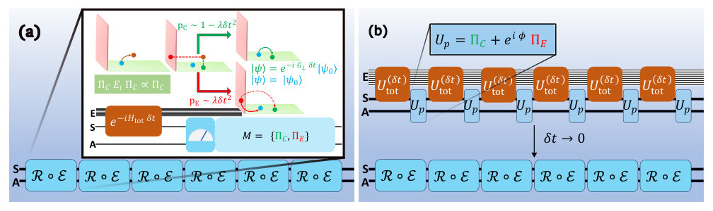
<figcaption class="paper-figure-caption"><b>Fig 1.</b> Figure 1. Illustration of the control schemes considered in this work. All lead to HL scaling when the signal generator G is not in the linear span of the error generators Ei, in the limit of infintely fast pulses. The dynamics of the system and its environment are associated with the Hamiltonian Htot which generates the unitary Utot(δt) and leads to the channel E. The second type of dynamics is associated with the controls and leads to the channel R. (a) Approximate quantum error detection (AQED) and Approximate quantum error correction (AQEC) schemes: After an infinitesimal evolution, a two- outcome projective measurement M = {ΠC, ΠE} is performed. With probability pC ∼1−λδt2, the state...</figcaption>
</figure>
<figure class="paper-figure-card">
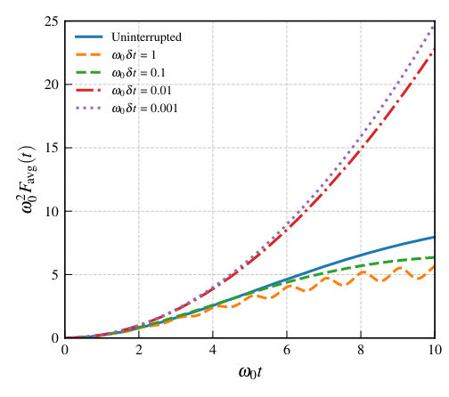
<figcaption class="paper-figure-caption"><b>Fig 2.</b> Figure 2. QFI as a function of time for Jaynes-Cummings model with detuning. We have set the parameters λ = ω0, γ0 = ∆= 5ω0. δt is the time duration between successive measurements. We see a decreasing value of the QFI with increasing δt. Note that the QFI for ω0δt = 0.1 is smaller than for the uninterrupted evolution.</figcaption>
</figure>
<figure class="paper-figure-card">
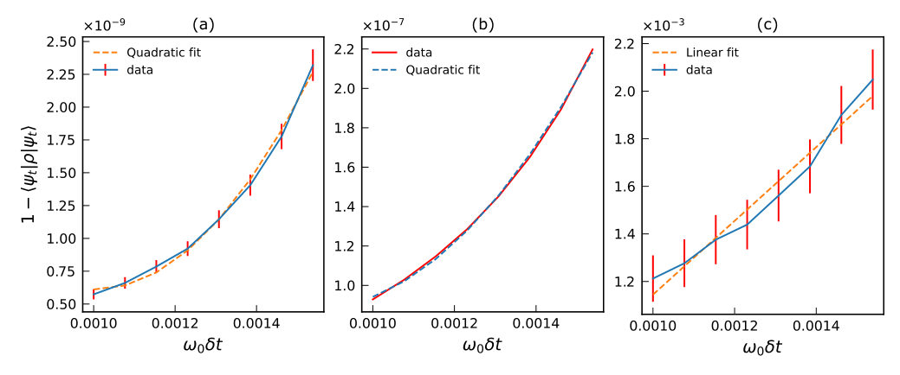
<figcaption class="paper-figure-caption"><b>Fig 3.</b> Figure 3. Infidelity of state at time ω0t = 10 (ρ(t)) with the exact evolution (|ψt⟩) vs δt. (a) plots the AQEC evolution, (b) the DD evolution and (c) plots the AQED evolution. The red bars on (a) and (c) are standard error σ/ √</figcaption>
</figure>
<figure class="paper-figure-card">
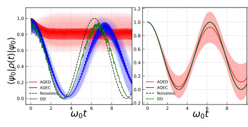
<figcaption class="paper-figure-caption"><b>Fig 4.</b> Figure 4. The mean Rabi oscillation over different trajecto- ries is plotted along with the variance for two different δt for AQEC and AQED code. The left is for ω0δt = 0.1 and the right is for ω0δt = 0.001. The shaded regions represent the standard deviations of the respective quantities.</figcaption>
</figure>
<figure class="paper-figure-card">
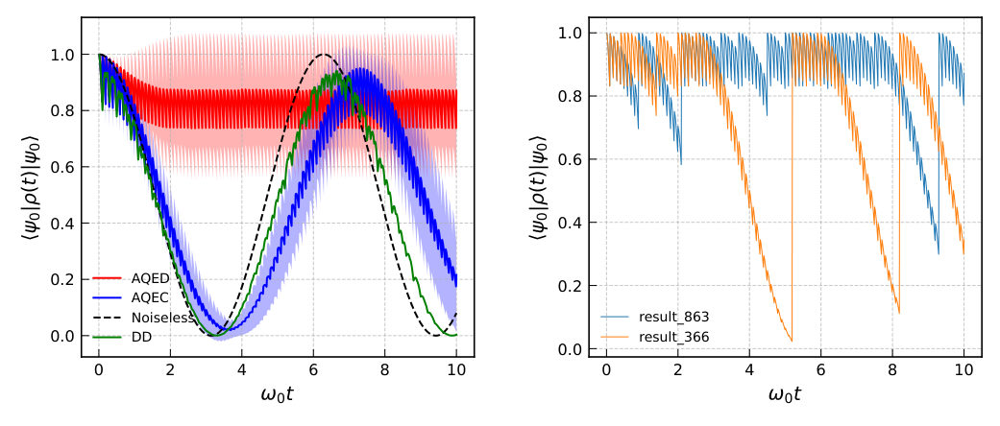
<figcaption class="paper-figure-caption"><b>Fig 5.</b> Figure 5. (Left) We plot the mean evolution of 10000 different trajectories along with the standard deviation for ω0δt = 0.1. The AQEC and DD evolutions are slightly damped, compared to the noiseless evolution, while the AQED evolution is extremely noisy. (Right) We plot two randomly chosen trajectories for the AQED simulation.</figcaption>
</figure>
</div>

<p><strong>Summary.</strong> This paper investigates how to maintain optimal Heisenberg-limited precision in quantum measurements when the system suffers from complex non-Markovian noise and controls are not instantaneous. By comparing measurement-only, active recovery, and dynamical decoupling protocols, the authors show that while all can theoretically achieve ideal scaling, practical limitations dictate which method performs best at finite control rates.</p>
<p><strong>Why it may be interesting.</strong> It provides concrete, quantitative comparisons of different control strategies for overcoming noise in quantum sensing, directly impacting how robust quantum sensors can be designed under realistic physical constraints.</p>
<details>
<summary>Detailed structure</summary>
<p><strong>Main problem.</strong> The central problem is achieving Heisenberg-limited quantum estimation scaling ($ ext{QFI} \propto t^2$) when the probe is subjected to non-Markovian noise and control operations are restricted to a finite rate.</p>
<p><strong>Main result.</strong> Protocols relying purely on measurements show poor scaling, whereas active recovery or dynamical decoupling protocols achieve superior convergence rates in the finite-rate regime.</p>
<p><strong>Method.</strong> The work analyzes three distinct quantum control schemes (measurement-only, active recovery, and dynamical decoupling) by establishing connections to the quantum Zeno effect and analyzing the resulting Quantum Fisher Information scaling.</p>
<p><strong>Model / system.</strong> The system involves a quantum probe coupled to an environment, modeled via total Hamiltonians. The analysis compares performance metrics across different noise models (Markovian vs. non-Markovian).</p>
<p><strong>Key observables.</strong> Quantum Fisher Information ($  ext{QFI}$), fidelity of the state evolution, and convergence rates as control frequency approaches zero.</p>
<p><strong>Important parameters / regimes.</strong> Finite control rate ($\delta t$), time $t$, and the structure of the noise generators $\{E_k\}$ relative to the signal generator $G$.</p>
<p><strong>Assumptions / limitations.</strong> The analysis rigorously compares performance in the finite-rate limit, contrasting with theoretical results derived assuming infinitely fast (Zeno) controls.</p>
<p><strong>Figures summary.</strong> Figures illustrate the three control schemes and show that AQEC and DD maintain high fidelity compared to AQED, especially as measurement intervals decrease.</p>
<p><strong>Paper structure.</strong> The paper establishes a connection between optimal metrology protocols and the quantum Zeno effect. It then rigorously analyzes the performance of measurement-only, active recovery, and dynamical decoupling methods when controls are limited to finite rates.</p>
</details>
<details>
<summary>Abstract</summary>
<p>Recently, it has been shown that protocols utilizing infinitely fast controls, such as quantum error correction, can in principle restore Heisenberg-limited frequency estimation in the presence of a broad class of non-Markovian noise models arising from coupling to finite-dimensional environments. However, these controls differ substantially from those used to address Markovian noise, and their underlying physical mechanism remains unclear. In this work, we establish a direct connection between these protocols and the quantum Zeno effect, and extend the framework to infinite-dimensional environments. We delineate three types of constructions: (a) protocols that rely solely on measurements, (b) protocols using an active recovery after measurements and (c) protocols using dynamical decoupling and rigorously analyze the performance of each when controls can be applied at only a finite rate. While protocols relying purely on measurements can be engineered for noise models where active recoveries are fundamentally impossible, they result in the quantum Fisher information exhibiting a quadratically worse dependence on the control frequency. Surprisingly, while dynamical decoupling protocols are possible whenever protocols relying only on measurements can be engineered, the quantum Fisher information has the same dependence on control frequency as the active recovery protocols. Numerical simulations suggest that the improvement offered by dynamical decoupling may work in regimes beyond the perturbative setting where our rigorous theorems apply.</p>
</details>
<p><sub><a href="#top">↑ back to top</a></sub></p>

<p><a id="paper-2607.12484"></a></p>
<h3 id="solitary-waves-of-attracting-sun-fermions"><a href="http://arxiv.org/abs/2607.12484v1">Solitary waves of attracting SU(N) fermions</a></h3>
<p><strong>Authors:</strong> Aysha Alsubaihi, Wayne J. Chetcuti, Frederic Chevy, Juan Polo, Luigi Amico<br>
<strong>Type:</strong> theory · <strong>Category:</strong> quantum gases · <strong>PDF:</strong> <a href="https://arxiv.org/pdf/2607.12484v1">https://arxiv.org/pdf/2607.12484v1</a><br>
<strong>Analysis basis:</strong> full PDF text, analyzed in chunks
<strong>Topic relevance:</strong> 🔥 <code>analog quantum simulation</code> <strong>4/5</strong> · <code>non-equilibrium dynamics</code> <strong>3/5</strong> · <code>non-equilibrium universality</code> <strong>2/5</strong> · <code>Frenkel-Kontorova</code> <strong>1/5</strong> · <code>Kondo &amp; dissipative impurity</code> <strong>1/5</strong> · <code>entanglement &amp; information structure</code> <strong>1/5</strong> · <code>methods for driven-dissipative</code> <strong>1/5</strong> · <code>scars &amp; prethermalization</code> <strong>1/5</strong></p>
<div class="figure-strip-hint">↔ Scroll figures horizontally</div>
<div class="paper-figures-scroll">
<figure class="paper-figure-card">
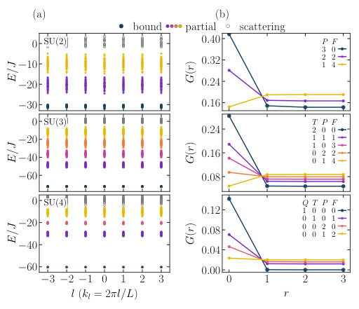
<figcaption class="paper-figure-caption"><b>Fig 1.</b> Figure 1. Energy-momentum spectrum E(kl) (left column) and cross-flavor density-density correlator G(r) (right col- umn) for SU(2) Np = 6 at |U|/J = 10, SU(3) with Np = 6 at |U|/J = 12, and SU(4) with Np = 4 at |U|/J = 10, on L = 7 sites. Colors encode the binding hierarchy: navy denotes the maximally bound lowest-energy band, the gradient denotes progressively more dissociated partially bound configurations, and gray markers denote scattering states. Each G(r) curve is averaged over all eigenstates of the corresponding band, within the zero-momentum (kl = 0) sector. The right-column legends list the composite content, where P, T, Q, and F denote pairs, trions, quartets, and unpaired...</figcaption>
</figure>
<figure class="paper-figure-card">
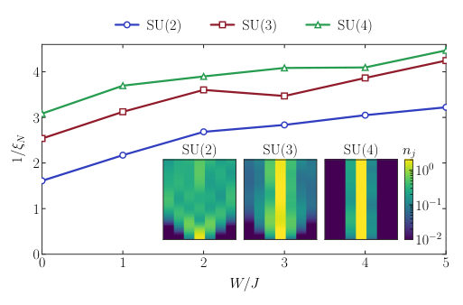
<figcaption class="paper-figure-caption"><b>Fig 2.</b> Figure 3. Robustness against on-site disorder at matched |U|N/J = 12 and one particle per component Np/N = 1. Main panel: inverse correlation length 1/ξN of the N-body correlator TN(r) vs. disorder strength W/J, for SU(2), SU(3), and SU(4) on an L = 7 ring. For each W/J, the on-site point r = 0 is excluded and 1/ξN is obtained from the magnitude of a linear fit to log TN(r) for r ≥1. The inverse correlation length displays an overall increasing trend with disorder and remains larger for higher N. Insets: representative disorder- averaged density evolution nj(t) following the pinning quench at W/J = 0.25 on an L = 7 ring, shown with a logarith- mic color scale in the rescaled time t ˜J for...</figcaption>
</figure>
<figure class="paper-figure-card">
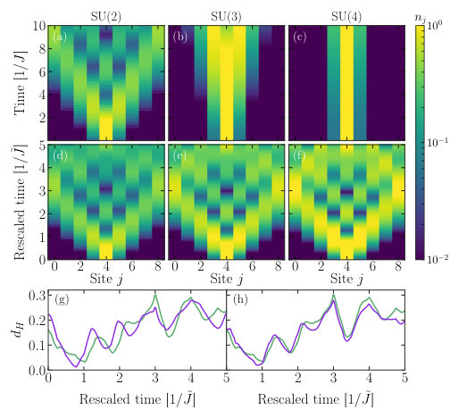
<figcaption class="paper-figure-caption"><b>Fig 3.</b> Figure 2. Density evolution nj(t) = P</figcaption>
</figure>
<figure class="paper-figure-card">
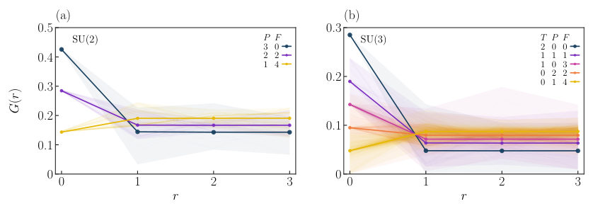
<figcaption class="paper-figure-caption"><b>Fig 4.</b> Figure 4. Cross-flavor correlator G(r) for individual eigenstates in each band, for all momentum sectors, for L = 7, |U|/J = 20. Bold lines are the band averages. For legibility only every second momentum sector is included, and within each band every tenth eigenstate is plotted. Curves are colored by the composite configuration of their band. The bound band has the sharpest r = 0 peak and the tightest clustering, while higher bands are progressively flatter, justifying the band-averaged G(r) across one momentum sector in Fig. 1.</figcaption>
</figure>
<figure class="paper-figure-card">
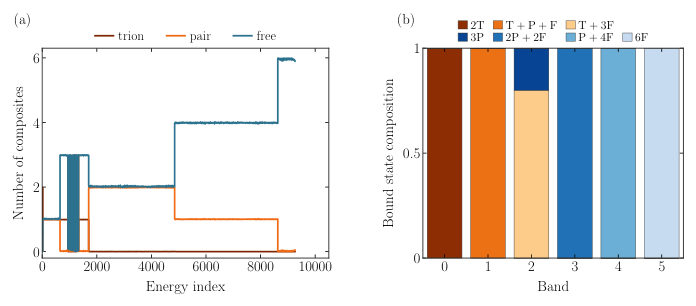
<figcaption class="paper-figure-caption"><b>Fig 5.</b> Figure 5. Composite structure of the SU(3) many-body spectrum for Np = 6 on L = 7 sites for interaction |U|/J = 20. (a) Number of trions NT , pairs NP , and free fermions NS as a function of eigenstate energy index (states ordered by increasing energy). Each count is flat within a band and jumps at the band edges as composites dissociate with increasing energy, from the fully bound band (two trions) to the full unbound highest band (six free fermions NS = 6). (b) Configuration structure of each band, shown as the fraction of states with a given composite content (T = trion, P = pairs, F = free fermion). Every band is a single configuration except band-2, which is a mixture of the T + 3F and...</figcaption>
</figure>
</div>

<p><strong>Summary.</strong> The paper theoretically investigates solitary waves formed by attractively interacting SU(N) fermions on a lattice. It establishes that these bound states exhibit dynamics analogous to quantum walks, mirroring classical soliton behavior. The study also quantifies how disorder affects this confinement and derives effective hopping parameters for the composite excitations.</p>
<p><strong>Why it may be interesting.</strong> This work connects concepts from integrable many-body physics (Bethe ansatz) with observable quantum transport phenomena (quantum walks), providing a detailed theoretical framework for understanding emergent collective excitations in strongly interacting fermionic systems relevant to ultracold atomic gases.</p>
<details>
<summary>Detailed structure</summary>
<p><strong>Main problem.</strong> The study investigates the formation, dynamics, and disorder robustness of bound states (solitary waves) in attractively interacting SU(N) fermions on a 1D lattice.</p>
<p><strong>Main result.</strong> Bound states propagate as quantum walks, exhibiting a dynamical signature analogous to classical soliton motion. Furthermore, their confinement is shown to be enhanced by increasing the component number N under disorder.</p>
<p><strong>Method.</strong> The analysis employs exact diagonalization in fixed-momentum sectors and utilizes Bethe ansatz results for the dilute limit. Dynamics are probed via quench protocols and correlation functions.</p>
<p><strong>Model / system.</strong> The system models attractively interacting SU(N) fermions on a 1D ring lattice, governed by an extended Fermi-Hubbard type Hamiltonian. The continuum limit maps this to the Gaudin–Yang–Sutherland (GYS) model.</p>
<p><strong>Key observables.</strong> Energy spectrum bands, density-density correlation $G(r)$, N-body correlator $T_N(r)$, and the Hellinger distance ($d_H$) comparing dynamics to single-particle quantum walks.</p>
<p><strong>Important parameters / regimes.</strong> Attractive interaction strength $|U|$, hopping amplitude $J$, disorder strength $W$, and component number $N$ (SU(2), SU(3), etc.).</p>
<p><strong>Assumptions / limitations.</strong> The analysis relies on mapping the lattice problem to integrable models in the dilute limit, and uses perturbative expansions for effective hopping in the strongly coupled regime.</p>
<p><strong>Figures summary.</strong> Figures illustrate energy spectra showing distinct bound bands (Fig. 1, Fig. 6), density evolution confirming quantum walk behavior after rescaling time (Fig. 2), and correlation length decay under disorder (Fig. 3, Fig. 8).</p>
<p><strong>Paper structure.</strong> The paper progresses from defining the lattice Hamiltonian and analyzing the energy spectrum via Bethe ansatz solutions to characterizing the dynamics using quench protocols and correlations. It then explores the continuum limit mapping and finally examines the robustness of these bound states against disorder.</p>
</details>
<details>
<summary>Abstract</summary>
<p>We study the formation, dynamics, and disorder robustness of bound states in attractively interacting SU(N) fermions on a one-dimensional ring lattice. Using exact diagonalization in fixed-momentum sectors and Bethe ansatz exact results as a guide, we resolve the many-body spectrum into bands related to the possible partitions of the particles into bound composites, and characterize their internal structure also through density-density and N-body correlations. A pinning quench protocol reveals a transition from dispersive spreading to dynamical localization as the attractive interaction increases relative to the single-particle hopping. We find that the bound state dynamics for one-particle per component occurs as a many-body quantum walk similar to that of a single particle with a re-normalized effective mass. Such a property, that is the quantum version of the shape-preserving motion of classical solitons, can provide the dynamical signature of the fermionic solitary waves. We probe the robustness of the fermionic bound-state dynamics under on-site disorder.</p>
</details>
<p><sub><a href="#top">↑ back to top</a></sub></p>

<p><a id="paper-2607.12401"></a></p>
<h3 id="pokrovsky-talapov-and-berezinskii-kosterlitz-thouless-phase-transitions-in-bilayer-superconducting-films-under-an-in-plane-magnetic-field"><a href="http://arxiv.org/abs/2607.12401v1">Pokrovsky--Talapov and Berezinskii--Kosterlitz--Thouless Phase Transitions in Bilayer Superconducting Films under an In-Plane Magnetic Field</a></h3>
<p><strong>Authors:</strong> Yicheng Zhong, Yi Zhou<br>
<strong>Type:</strong> theory · <strong>Category:</strong> statistical mechanics · <strong>PDF:</strong> <a href="https://arxiv.org/pdf/2607.12401v1">https://arxiv.org/pdf/2607.12401v1</a><br>
<strong>Analysis basis:</strong> full PDF text, analyzed in chunks
<strong>Topic relevance:</strong> 🔥 <code>Frenkel-Kontorova</code> <strong>4/5</strong> · <code>Keldysh / 2PI / non-Gaussian methods</code> <strong>2/5</strong> · <code>driven-dissipative phase transition</code> <strong>2/5</strong> · <code>analog quantum simulation</code> <strong>1/5</strong> · <code>methods for driven-dissipative</code> <strong>1/5</strong> · <code>non-equilibrium dynamics</code> <strong>1/5</strong> · <code>non-equilibrium universality</code> <strong>1/5</strong></p>
<div class="figure-strip-hint">↔ Scroll figures horizontally</div>
<div class="paper-figures-scroll">
<figure class="paper-figure-card">
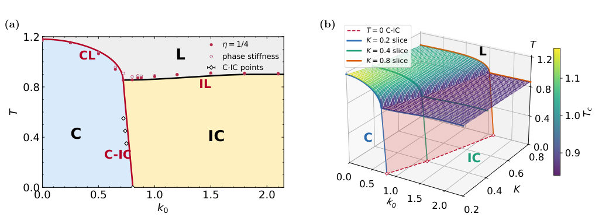
<figcaption class="paper-figure-caption"><b>Fig 1.</b> FIG. 1. Phase diagrams of the compact layer-phase model. (a) Representative (k0, T) cut at K = 0.2. Symbols mark Monte Carlo thermal-boundary diagnostics and fixed-soliton-sector C–IC crossings; curves are inferred phase boundaries. (b) Three- dimensional (k0, T, K) phase diagram, showing the PT C–IC wall and the BKT-like C–L and IC–L melting surfaces.</figcaption>
</figure>
<figure class="paper-figure-card">
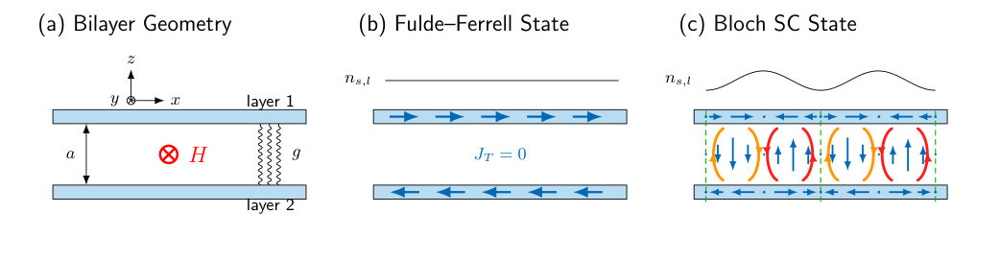
<figcaption class="paper-figure-caption"><b>Fig 2.</b> FIG. 2. Bilayer model and representative current patterns. (a) Two superconducting layers separated by a, coupled by Josephson tunneling g, and subject to an in-plane field H = H ˆy, indicated by ⊗. (b) Fulde–Ferrell state with uniform superfluid density, counterpropagating intralayer supercurrents, and zero interlayer Josephson current JT = 0. (c) Bloch SC state with modulated superfluid density; blue arrows show in-plane supercurrents, and colored loops mark interlayer Josephson vortex–antivortex unit cells.</figcaption>
</figure>
<figure class="paper-figure-card">
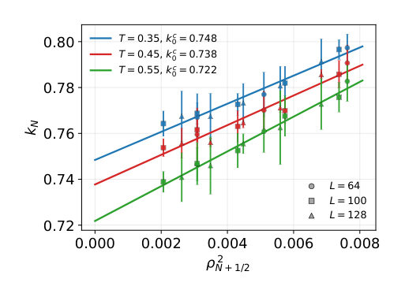
<figcaption class="paper-figure-caption"><b>Fig 3.</b> FIG. 3. Fixed-soliton-sector test of the PT soliton-entry boundary at K = 0.2. Points are thermodynamic-integration crossings for L = 64, 100, 128 and T = 0.35, 0.45, 0.55, plotted as kN versus ρ2 N+1/2. Linear fits to kN = kc 0(T)+A(T)ρ2 N+1/2 over 0.002 ≤ρ2 N+1/2 ≤0.008 give the finite-temperature C– IC boundary.</figcaption>
</figure>
<figure class="paper-figure-card">
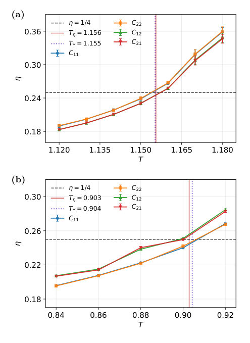
<figcaption class="paper-figure-caption"><b>Fig 4.</b> FIG. 4. Phase-correlation diagnostics for thermal melting at K = 0.2, L = 100. (a) C–L cut at k0 = 0.25; (b) IC–L cut at k0 = 1.5. Symbols show fitted correlation exponents from C11, C12, C21, C22. Guides mark η = 1/4 and the stiff- ness criteria Υ+ = T/(2π) in (a) and Υ+ + Υ−= 2T/π in (b). The small spread among the Tη estimates from different Cαβ channels and their small offset from TΥ are finite-size ef- fects expected to vanish in the thermodynamic limit; the C–L finite-size trend is shown in Appendix .</figcaption>
</figure>
<figure class="paper-figure-card">
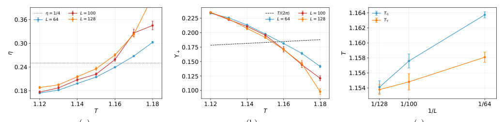
<figcaption class="paper-figure-caption"><b>Fig 5.</b> FIG. 5. Finite-size C–L boundary diagnostics. (a) Mean diagonal layer exponent ηℓ; the dashed line marks 1/4. (b) Common helicity modulus, with the comparison line Υ+ = T/(2π). (c) Crossing temperatures from ηℓ= 1/4 and Υ+ = T/(2π).</figcaption>
</figure>
</div>

<p><strong>Summary.</strong> This paper theoretically maps the complex finite-temperature phase diagram of a Josephson-coupled superconducting bilayer under an in-plane magnetic field. It distinguishes between two types of transitions: the Pokrovsky–Talapov transition driven by soliton entry, and Berezinskii–Kosterlitz–Thouless melting governed by vortex unbinding. The analysis uses advanced RG techniques to characterize these competing critical lines.</p>
<p><strong>Why it may be interesting.</strong> This work provides a detailed theoretical framework for understanding how competing topological defects (solitons vs. vortices) dictate phase transitions in superconducting systems, which has parallels with critical phenomena studied in quantum many-body physics.</p>
<details>
<summary>Detailed structure</summary>
<p><strong>Main problem.</strong> The study investigates finite-temperature phase transitions (Pokrovsky–Talapov and Berezinskii–Kosterlitz–Thouless) in a Josephson-coupled bilayer superconducting film subjected to an in-plane magnetic field.</p>
<p><strong>Main result.</strong> The phase diagram is characterized by three distinct boundaries: the PT soliton-entry line separating C/FF from IC/Bloch SC, and two BKT-like thermal melting lines (C–L and IC–L).</p>
<p><strong>Method.</strong> The authors employ Renormalization Group (RG) analysis on a continuum action derived from the Ginzburg-Landau functional, supplemented by Monte Carlo simulations.</p>
<p><strong>Model / system.</strong> The system is a Josephson-coupled superconducting bilayer ($\psi_1, \psi_2$) placed in an in-plane magnetic field ($H$). The effective theory involves phase dynamics governed by relative and common phase sectors.</p>
<p><strong>Key observables.</strong> Correlation exponents (expected to approach 1/4 at BKT transitions), helicity moduli ($\Upsilon$), and the soliton density $
ho_{    ext{sol}}$ determining the C–IC boundary.</p>
<p><strong>Important parameters / regimes.</strong> In-plane magnetic field parameter $k_0 = 2\pi H a / \Phi_0$, temperature $T$, and Josephson coupling strength $K$.</p>
<p><strong>Assumptions / limitations.</strong> The analysis relies on weak-fugacity RG schemes and assumes that the C–IC transition is governed by soliton entry, distinct from thermal vortex unbinding.</p>
<p><strong>Figures summary.</strong> Figures illustrate phase diagrams showing the coexistence of PT (soliton) and BKT (thermal melting) boundaries, and show finite-size scaling diagnostics confirming the expected critical exponents for the thermal transitions.</p>
<p><strong>Paper structure.</strong> The paper develops an effective continuum action, applies RG techniques to track vortex fugacities and stiffnesses, determines the zero-temperature PT boundary via fixed-sector free energy crossings, and analyzes the finite-temperature BKT boundaries using correlation function decay and helicity modulus criteria.</p>
</details>
<details>
<summary>Abstract</summary>
<p>We study finite-temperature phase transitions in a Josephson-coupled bilayer superconducting film with compact layer phases under an in-plane magnetic field. At zero temperature, where thermally excited layer vortices are absent, the relative-phase sector undergoes a Pokrovsky--Talapov (PT) commensurate--incommensurate (C--IC) transition from a commensurate Fulde--Ferrell (C/FF) state to an incommensurate Bloch superconducting (IC/Bloch SC) state. At finite temperature, compactness separates two distinct defect mechanisms. The C--IC boundary remains a PT soliton-entry line: interlayer Josephson vortex--antivortex-pair solitons enter with the square-root onset $ρ_{\rm sol}\propto [k_0-k_0^c(T)]^{1/2}$. Thermal melting is instead Berezinskii--Kosterlitz--Thouless (BKT)-like, with correlation exponent $η=1/4$ at the boundary, but the active vortex channel changes across the phase diagram. Josephson locking suppresses elementary layer vortices in the C/FF state and selects a same-vorticity layer-pair BKT channel, whereas elementary layer vortices control melting of the IC/Bloch SC state.</p>
</details>
<p><sub><a href="#top">↑ back to top</a></sub></p>

<p><a id="paper-2607.12182"></a></p>
<h3 id="roadmap-towards-quantum-entanglement-positron-emission-tomography-qe-pet"><a href="http://arxiv.org/abs/2607.12182v1">Roadmap Towards Quantum Entanglement Positron Emission Tomography (QE-PET)</a></h3>
<p><strong>Authors:</strong> Paweł Moskal, Shiva Abbaszadeh, Harmanjeet Singh Bilkhu, Peter Caradonna, Pragya Das, Praveen Gurunath Bharathi, Ana Marija Kožuljević, Zdenka Kuncic, Deepak Kumar, Mihael Makek, Marek Nowakowski, Siddharth Parashari, Kaustav Prasad, Gregory R. Romanchek, Sushil Sharma, Kenji Shimazoe, Ewa Stępień, Sodai Takyu, Miwako Takahashi, Mizuki Uenomachi, Ritesh Verma, Taiga Yamaya<br>
<strong>Type:</strong> both · <strong>Category:</strong> other · <strong>PDF:</strong> <a href="https://arxiv.org/pdf/2607.12182v1">https://arxiv.org/pdf/2607.12182v1</a><br>
<strong>Analysis basis:</strong> full PDF text, analyzed in chunks
<strong>Topic relevance:</strong> 🔥 <code>entanglement &amp; information structure</code> <strong>4/5</strong> · <code>quantum optics experiment</code> <strong>3/5</strong> · <code>quantum measurements</code> <strong>2/5</strong> · <code>correlated / nonlocal dissipation</code> <strong>1/5</strong> · <code>driven-dissipative phase transition</code> <strong>1/5</strong> · <code>interference shaping light</code> <strong>1/5</strong></p>
<div class="figure-strip-hint">↔ Scroll figures horizontally</div>
<div class="paper-figures-scroll">
<figure class="paper-figure-card">
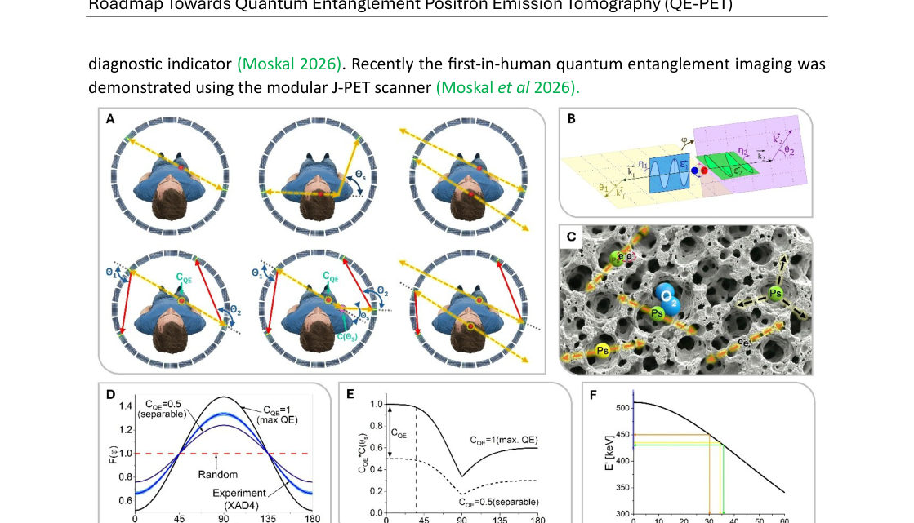
<figcaption class="paper-figure-caption"><b>Fig 1.</b> Figure 1. Illustration of phenomena and main results relevant for the development of Quantum Entangled PET. (A) Cross section for the modular J-PET scanner (Moskal et al 2024), the first Quantum Entanglement PET system with superimposed photons from electron-positron annihilation indicated in red-yellow dashed arrows (left), event in which one of the photons underwent Compton scattering in the body at angle θS (middle), and event contributing to random coincidences where registered photons originate from two different annihilations. Lower panel of this figure shows the same events as upper panel with additional scattered photons (red arrows). C(θS) is the measure of correlation after...</figcaption>
</figure>
<figure class="paper-figure-card">
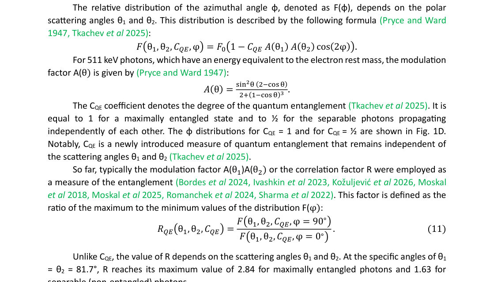
<figcaption class="paper-figure-caption"><b>Fig 2.</b> Fig. 1D also illustrates the recent discovery that the degree of entanglement is not maximal for photons from electron-positron annihilation in the porous polymer (Moskal 2026). The experimental result is represented by the blue band. This observation can be explained by assuming that photons created via the pick-off effect (see Fig. 1C) are separable, while photons from other processes remain maximally entangled. Although this may be a simplification, it demonstrates that the degree of entanglement, CQE (and equivalently R), varies as a function of the annihilation mechanism. As depicted in Figure 1C, there are four primary mechanisms leading to the emission of two 511 keV photons. These...</figcaption>
</figure>
<figure class="paper-figure-card">
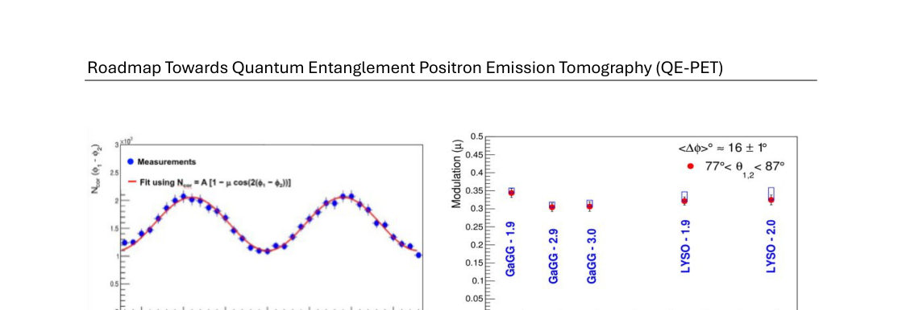
<figcaption class="paper-figure-caption"><b>Fig 3.</b> Figure 1. Reconstructed azimuthal correlation distribution - example (left); Comparison of the polarimetric modulation factors obtained with different detector material and crystal width (right). Adapted from (Parashari et al 2022).</figcaption>
</figure>
<figure class="paper-figure-card">
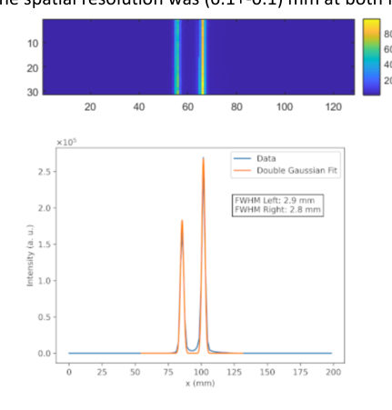
<figcaption class="paper-figure-caption"><b>Fig 4.</b> Figure 2. Coronal images and the corresponding intensity profiles of the Ge-68 Line sources obtained with the SPE (left) and the PCE (right). (Kožuljević 2025)</figcaption>
</figure>
<figure class="paper-figure-card">
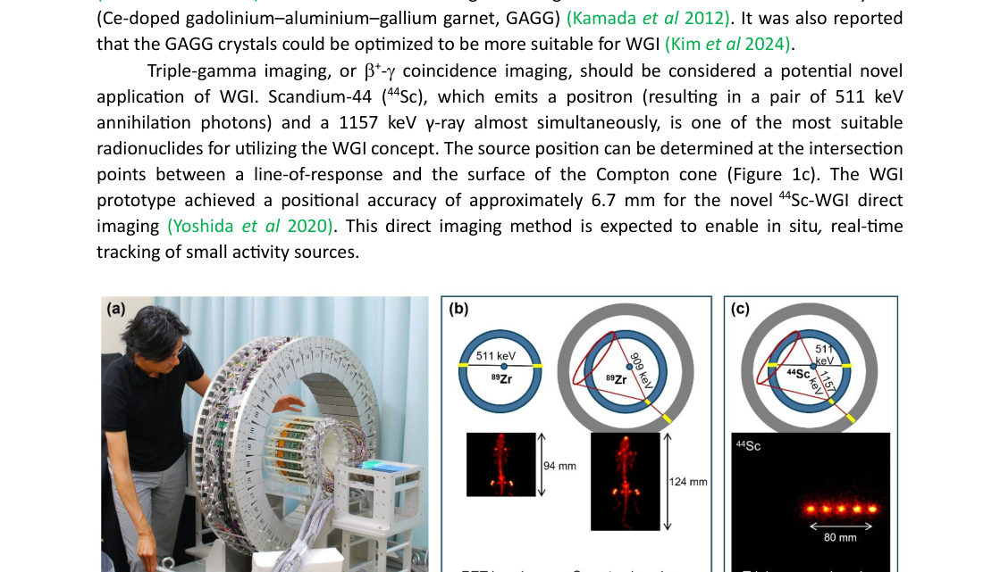
<figcaption class="paper-figure-caption"><b>Fig 5.</b> Figure 1. A whole gamma imaging (WGI) prototype, which was a PET system combined with a Compton camera (a). The mouse imaging (1-hour measurement started 22 hours after 9.8 MBq 89Zr-oxalate injection) demonstrates the Compton image obtained using 909 keV gamma rays is comparative in quality to that of the PET image (b). A 44Sc-containing vial was shifted at 2 cm intervals and visualized with a simple backprojection of the intersection points of the Compton cone and the line of response of PET (c). Advances in Science and Technology to Meet Challenges Another crucial factor to consider is the time difference between the positron decay and the single- gamma emission (Tashima and Yamaya 2024)....</figcaption>
</figure>
</div>

<p><strong>Summary.</strong> This roadmap details the development of Quantum Entanglement PET (QE-PET), which aims to improve standard PET imaging by measuring the quantum entanglement between annihilation photons. By characterizing this entanglement, researchers propose new diagnostic biomarkers related to tissue oxygenation and pH mapping. While promising, translating these sophisticated quantum measurements into clinical scanners remains a significant ongoing challenge.</p>
<p><strong>Why it may be interesting.</strong> This work bridges quantum optics/information theory directly into applied medical physics. The ability to use fundamental quantum properties like entanglement as a measurable biomarker for biological processes is highly relevant to open quantum systems research.</p>
<details>
<summary>Detailed structure</summary>
<p><strong>Main problem.</strong> The goal is to advance Positron Emission Tomography (PET) by leveraging the quantum entanglement inherent in annihilation photons, leading to a novel modality called Quantum Entanglement PET (QE-PET). This aims to overcome limitations like random coincidences and improve diagnostic capabilities.</p>
<p><strong>Main result.</strong> The study establishes that quantum correlation is preserved even when one photon undergoes Compton scattering, allowing the degree of quantum entanglement ($  ext{CQE}$) to be measured as a potential diagnostic biomarker for tissue pathology or oxygenation.</p>
<p><strong>Method.</strong> The research combines theoretical modeling of entangled photon states with descriptions of advanced detector systems (e.g., crystal scintillators, semiconductors) capable of measuring polarization and Compton scattering angles simultaneously.</p>
<p><strong>Model / system.</strong> The physical system is the annihilation of an electron-positron pair into two back-to-back photons ($   ext{511 keV}$). The theoretical framework models the quantum state using entanglement measures like $   ext{CQE}$ and analyzes how this correlation changes upon interaction with matter (Compton scattering).</p>
<p><strong>Key observables.</strong> Degree of Quantum Entanglement ($  ext{CQE}$), angular correlations ($C(   heta_S)$), relative angle ($\varphi$), and the energy spectrum of scattered photons.</p>
<p><strong>Important parameters / regimes.</strong> Scattering angles ($    heta_S$), coincidence rates, and the specific physics of annihilation mechanisms (direct vs. positronium).</p>
<p><strong>Assumptions / limitations.</strong> The primary open question is the successful translation of entanglement-based imaging into routine clinical practice due to low detection sensitivity.</p>
<p><strong>Figures summary.</strong> Figures illustrate event reconstruction in prototype scanners, polarization/Compton scattering planes, various annihilation processes, and plots showing how $ ext{CQE}$ and correlation measures depend on the Compton scattering angle ($    heta_S$).</p>
<p><strong>Paper structure.</strong> The paper functions as a roadmap, first establishing the physics background (entanglement preservation during scattering), detailing necessary detector technologies, presenting theoretical observables ($    ext{CQE}$, $C(	heta_S)$), and concluding with the potential diagnostic applications (oxygenation mapping, pH imaging).</p>
</details>
<details>
<summary>Abstract</summary>
<p>Annihilation photons are quantum entangled in their polarization, a property that is not accessible in state-of-the-art clinical Positron Emission Tomography (PET). This roadmap describes the current status of research in the emerging field of quantum entanglement applications involving these photons for medical diagnosis. It outlines the underlying physics phenomena and the development of detector systems that can serve as a foundation for future Quantum Entanglement PET (QE-PET) scanners. These scanners will be capable of utilizing the entanglement between annihilation photons by measuring their Compton scattering on electrons. This roadmap comprises up-to-date experimental results on the study of quantum entanglement and the decoherence of annihilation photons, alongside the current theoretical understanding of these phenomena. The methods and detector technologies described herein are being developed (i) in order to enhance standard PET imaging by suppressing random coincidences in the reconstruction of annihilation site density distributions, (ii) in order to establish the degree of quantum entanglement as a diagnostic biomarker for tissue pathology and oxygenation, and (iii) in order to elaborate a method for pH imaging. Whether entanglement-based imaging and pH mapping can be successfully translated into clinical practice remains an open question and a subject of exciting ongoing research. This roadmap serves as an invitation to the scientific community to join this burgeoning field.</p>
</details>
<p><sub><a href="#top">↑ back to top</a></sub></p>

<p><a id="paper-2607.12718"></a></p>
<h3 id="standard-basis-operator-method-for-ground-state-and-temperature-properties-of-single-and-two-component-bose-hubbard-model"><a href="http://arxiv.org/abs/2607.12718v1">Standard basis operator method for ground-state and temperature properties of single and two-component Bose-Hubbard model</a></h3>
<p><strong>Authors:</strong> Oliwier Urbański, Tomasz P. Polak<br>
<strong>Type:</strong> theory · <strong>Category:</strong> quantum gases · <strong>PDF:</strong> <a href="https://arxiv.org/pdf/2607.12718v1">https://arxiv.org/pdf/2607.12718v1</a><br>
<strong>Analysis basis:</strong> full PDF text, analyzed in chunks
<strong>Topic relevance:</strong> 🔥 <code>analog quantum simulation</code> <strong>4/5</strong> · <code>Keldysh / 2PI / non-Gaussian methods</code> <strong>3/5</strong> · <code>methods for driven-dissipative</code> <strong>2/5</strong> · <code>correlated cavity matter</code> <strong>1/5</strong> · <code>driven-dissipative phase transition</code> <strong>1/5</strong> · <code>entanglement &amp; information structure</code> <strong>1/5</strong></p>
<div class="figure-strip-hint">↔ Scroll figures horizontally</div>
<div class="paper-figures-scroll">
<figure class="paper-figure-card">
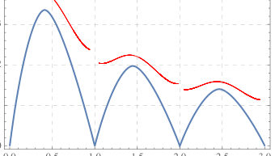
<figcaption class="paper-figure-caption"><b>Fig 1.</b> Figure 1: Three lobes in zero and moderate temperature in the TSA.</figcaption>
</figure>
<figure class="paper-figure-card">
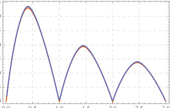
<figcaption class="paper-figure-caption"><b>Fig 2.</b> Figure 2: Comparison of the zero-temperature lobes for three- and five-states approximation.</figcaption>
</figure>
<figure class="paper-figure-card">
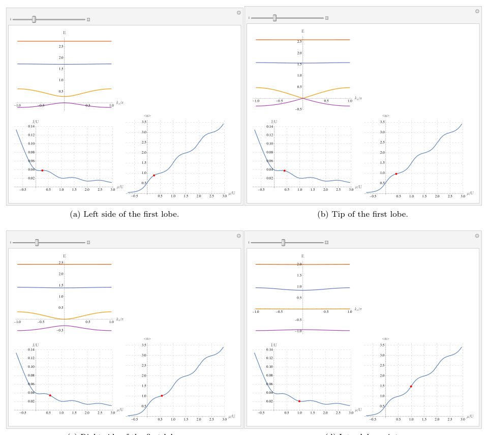
<figcaption class="paper-figure-caption"><b>Fig 3.</b> Figure 4: Dispersion relation for various points on the critical line presented together with the mean number of bosons per site as a function of the chemical potential.</figcaption>
</figure>
<figure class="paper-figure-card">
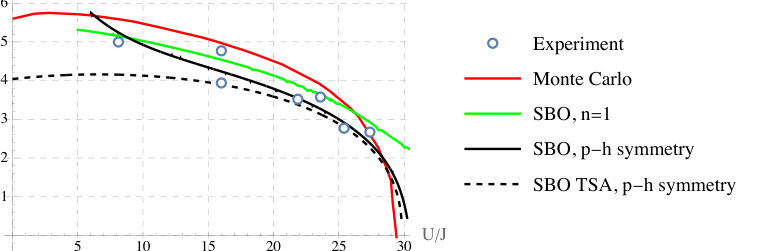
<figcaption class="paper-figure-caption"><b>Fig 4.</b> Figure 5: Critical temperature as a function of interaction strength for various settings. The experimental data comes from21.</figcaption>
</figure>
<figure class="paper-figure-card">
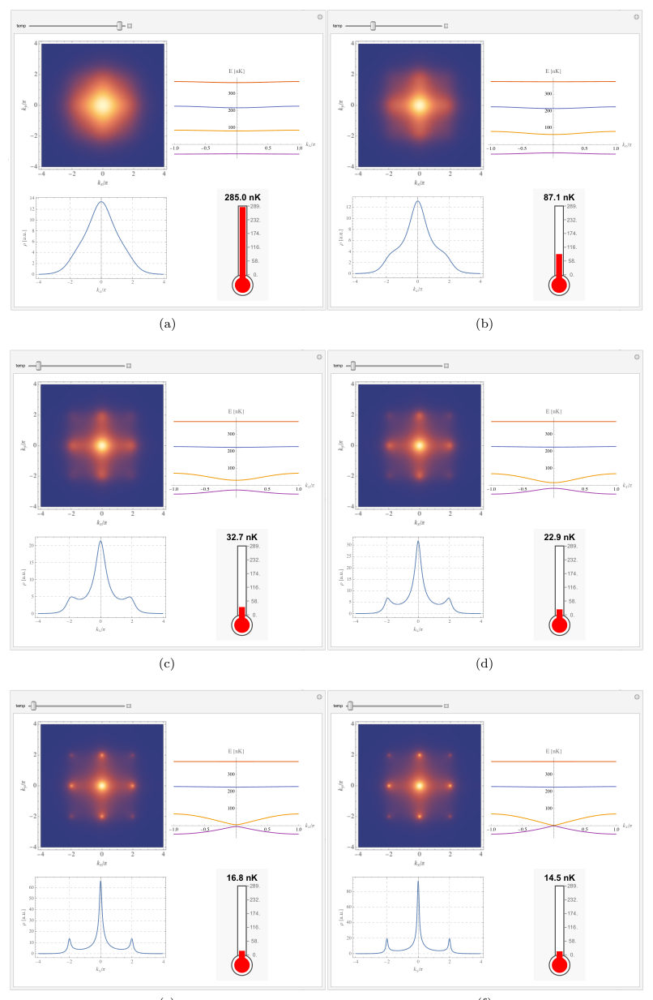
<figcaption class="paper-figure-caption"><b>Fig 5.</b> Figure 6: Time of flight patterns as a function of temperature presented together with the dispersion plots and reference thermometer.</figcaption>
</figure>
</div>

<p><strong>Summary.</strong> The paper introduces an enhanced Standard Basis Operator method to calculate the properties of the Bose-Hubbard model. It improves upon prior work by correctly accounting for more on-site states at finite temperatures and predicts complex phase transitions in multi-component systems. The methodology is highly relevant for understanding strongly correlated quantum gases.</p>
<p><strong>Why it may be interesting.</strong> This work provides advanced theoretical tools (improved SBO) to study interacting quantum gases, offering quantitative improvements over previous approximations by systematically handling local Hilbert space truncation effects.</p>
<details>
<summary>Detailed structure</summary>
<p><strong>Main problem.</strong> The authors aim to develop an improved theoretical method for calculating both ground-state and finite-temperature properties of the Bose-Hubbard model.</p>
<p><strong>Main result.</strong> They successfully enhanced predictions by accounting for a necessary number of on-site states, while also predicting non-trivial phase diagram deformations in the two-component case.</p>
<p><strong>Method.</strong> The core method is an improved Standard Basis Operator (SBO) approach formulated within a nonperturbative Green's function framework, utilizing Random Phase Approximation (RPA).</p>
<p><strong>Model / system.</strong> The study focuses on the single and two-component Bose-Hubbard model in three dimensions, governed by a Hamiltonian involving hopping ($J$), on-site interaction ($U$), and chemical potential ($\mu$).</p>
<p><strong>Key observables.</strong> Phase boundary, excitation spectra, boson occupancies (D_alpha), critical temperature (T_c/J).</p>
<p><strong>Important parameters / regimes.</strong> Interaction strength to hopping ratio (U/J), chemical potential ($\mu/U$), and temperature ($T/J$).</p>
<p><strong>Assumptions / limitations.</strong> The method relies on the RPA for decoupling higher-order Green's functions, which is noted to violate algebraic rules in multi-component systems.</p>
<p><strong>Figures summary.</strong> Figures compare critical lines (SBO vs. QRA vs. TNS), show lobe structures at different temperatures, and illustrate how increasing the number of retained local Fock states improves accuracy.</p>
<p><strong>Paper structure.</strong> The paper develops the SBO method using Green's functions, applies RPA to solve for these functions in momentum space, derives self-consistency equations from spectral theorems, and discusses limitations regarding multi-component extensions and numerical stability near phase transitions.</p>
</details>
<details>
<summary>Abstract</summary>
<p>We formulate an improved standard basis operator (SBO) method for the single and two-component Bose-Hubbard model in three dimensions. In the first case, nonzero temperature predictions are qualitatively and quantitatively enhanced by taking into account necessary number of on-site states, not just three as in previous works. Performance of the final numerical calculations is also improved by asymptotic analysis of the self-consistent equations near the critical line. Obtained results are compared with Monte-Carlo, tensor networks, Quantum Rotor Approach and experimental data. In the two-component case, SBO generalizes rather poorly, being able to account for intra-species thermal and quantum fluctuations, but not the inter-species ones. Deeper reasons for this situation are discussed. Still however, non-trivial deformation of the phase diagrams is predicted, together with first-order phase transitions steered by the changes in chemical potential.</p>
</details>
<p><sub><a href="#top">↑ back to top</a></sub></p>

<p><a id="paper-2607.12167"></a></p>
<h3 id="long-baseline-optical-interferometric-imaging-with-active-phase-stabilization"><a href="http://arxiv.org/abs/2607.12167v1">Long baseline optical interferometric imaging with active phase stabilization</a></h3>
<p><strong>Authors:</strong> Joshua J. Collier, Leuca Patmore, John S. Wallis, Elrina Hartman, Benjamin P. Dix-Matthews, David R. Gozzard<br>
<strong>Type:</strong> both · <strong>Category:</strong> other · <strong>PDF:</strong> <a href="https://arxiv.org/pdf/2607.12167v1">https://arxiv.org/pdf/2607.12167v1</a><br>
<strong>Analysis basis:</strong> full PDF text, analyzed in chunks
<strong>Topic relevance:</strong> 🔥 <code>interference shaping light</code> <strong>4/5</strong> · <code>quantum measurements</code> <strong>3/5</strong> · <code>quantum optics experiment</code> <strong>3/5</strong> · <code>measurement-induced transitions</code> <strong>1/5</strong></p>
<div class="figure-strip-hint">↔ Scroll figures horizontally</div>
<div class="paper-figures-scroll">
<figure class="paper-figure-card">

<figcaption class="paper-figure-caption"><b>Fig 1.</b> FIG. 1. Simplified schematic of the pseudo-thermal source generation and stabilized interferometer. Left: Pseudo-thermal source generation. Light-blue is the thermal source in free space. Right: Optical interferometer. VGA: v-groove array, AOM: acousto-optic modulator, (M)ODL: (motorized) optical delay line, SNSPD: superconducting nanowire single photon detector, PD: photodetector, PC: polarization controller, DWDM: dense wavelength division multiplexer, FBS: fiberized beam splitter, GGD: ground glass disk, SM: stepper motor. The FBS split ratios are listed within the symbol where relevant.</figcaption>
</figure>
<figure class="paper-figure-card">

<figcaption class="paper-figure-caption"><b>Fig 2.</b> FIG. 2. Phase spectral density of interferometer. The red curves are stabilizing signal, and the blue curves are thermal signal. The dashed lines show the response of the system without stabilization, and the solid lines show the response of the system with stabilization. Reproduced from [19].</figcaption>
</figure>
<figure class="paper-figure-card">

<figcaption class="paper-figure-caption"><b>Fig 3.</b> FIG. 3. Complex degree of coherence measured at a series of baselines. We have a 164 µm across source 42 mm away from the receivers of the interferometer. Error bars are produced by fitting a series of curves to chunks of the collected dataset, then taking the best fit for each of them, the mean of these is the CDC estimate, the standard deviation is the error. Source size estimate from green curve is 166.47 µm.</figcaption>
</figure>
<figure class="paper-figure-card">

<figcaption class="paper-figure-caption"><b>Fig 4.</b> FIG. 5. Phase sweep of the interferometer before introducing the stabilization system with a 127 µm collecting baseline, and a 164 µm source that is 42 mm away. Orange and blue curves are the first order interference fringes, the green curve is the second order. Solid curves are sinusoids matched to the data.</figcaption>
</figure>
<figure class="paper-figure-card">

<figcaption class="paper-figure-caption"><b>Fig 5.</b> FIG. 4. Phase sweep of the stabilized interferometer with 127 µm collecting baseline, and a 164 µm source that is 42 mm away. Orange and blue curves are the first order interference fringes, the green curve is the second order. Solid curves are sinusoids matched to the data.</figcaption>
</figure>
</div>

<p><strong>Summary.</strong> This paper details the use of active phase stabilization techniques, borrowed from quantum communications, to enable long baseline optical interferometry using fiber connections. By successfully stabilizing an interferometer over 170km, the authors demonstrate that source sizes can be resolved far below the diffraction limit. This significantly advances the feasibility of building full-scale, high-resolution astronomical instruments.</p>
<p><strong>Why it may be interesting.</strong> This work is highly relevant as it bridges advanced quantum optics (phase stabilization, quantum estimation) directly into a major area of astrophysics/quantum sensing, providing concrete engineering pathways for next-generation astronomical instruments.</p>
<details>
<summary>Detailed structure</summary>
<p><strong>Main problem.</strong> The primary goal is to overcome the diffraction limit in astronomical imaging by implementing long baseline optical interferometry, which requires mitigating severe phase noise accumulated over long fiber links.</p>
<p><strong>Main result.</strong> By applying quantum communication-inspired active phase stabilization techniques, the authors successfully demonstrated measurements on a 170km pseudo-baseline that allowed for source size estimation significantly below the system's diffraction limit.</p>
<p><strong>Method.</strong> The work combines experimental implementation of interferometry with theoretical analysis using quantum optimal measurement estimators to extract source parameters from noisy fringe visibility data.</p>
<p><strong>Model / system.</strong> The physical platform is a long baseline optical interferometer utilizing single-mode fibers over baselines up to 170km, emulating a pseudo-thermal astronomical source. The system incorporates active phase stabilization derived from quantum communication principles.</p>
<p><strong>Key observables.</strong> Fringe visibility values, Complex Degree of Coherence (CDC), and the estimated angular size of the celestial source.</p>
<p><strong>Important parameters / regimes.</strong> Baselines up to 350km are targeted; sub microarcsecond resolution is the ultimate goal. Phase noise reduction across long fiber links is critical.</p>
<p><strong>Assumptions / limitations.</strong> The method assumes that advances in low-loss fibers will enable full-scale deployment, and the quantum estimator approach outperforms classical methods for source size determination.</p>
<p><strong>Figures summary.</strong> Figures illustrate the setup schematic, phase spectral density comparisons showing noise reduction via stabilization, and fringe visibility measurements confirming successful signal recovery.</p>
<p><strong>Paper structure.</strong> The paper progresses from establishing the need for long baseline interferometry to detailing the experimental implementation using fiber links. It then focuses on demonstrating that quantum-inspired phase stabilization techniques are necessary and sufficient to recover usable interference fringes and estimate source sizes accurately.</p>
</details>
<details>
<summary>Abstract</summary>
<p>Astronomical observations allow us to better our understanding of the universe. As we observe smaller and more distance features, we run into the diffraction limit of our observation system. This limit is a function of the wavelength observed and the size of the primary aperture used. We can synthesize a larger primary aperture by implementing interferometry. Long baseline optical interferometry would lead to significant improvements in astronomical imaging resolution. Building optical interferometers with free space baselines becomes significantly more difficult as the baseline increases. A promising alternative is to use optical fiber to connect telescopes. Fiber-based interferometers are much more susceptible to phase noise than their free-space counterparts due to inhomogeneities in the fiber medium. This leads to significant degradation of interferometric signals used for astronomical measurements. We implement phase stabilization techniques used in quantum communications to stabilize an optical interferometer with a 170km pseudo-baseline. We use a quantum optimal measurement technique with this interferometer to resolve the extent of a source four times smaller than the diffraction limit of the system within 1.5% error. These results bring the potential for a full-scale on-sky long baseline interferometer significantly closer. A 350km baseline optical interferometer at 1550nm would allow us to resolve sub microarcsecond features in the universe.</p>
</details>
<p><sub><a href="#top">↑ back to top</a></sub></p>

<p><a id="paper-2607.12925"></a></p>
<h3 id="microscopic-spin-1-parent-hamiltonians-for-emergent-valence-bond-loop-manifolds"><a href="http://arxiv.org/abs/2607.12925v1">Microscopic Spin-1 Parent Hamiltonians for Emergent Valence-Bond Loop Manifolds</a></h3>
<p><strong>Authors:</strong> Hari Borutta, Yasir Iqbal, Kirill Shtengel<br>
<strong>Type:</strong> theory · <strong>Category:</strong> strongly correlated electrons · <strong>PDF:</strong> <a href="https://arxiv.org/pdf/2607.12925v1">https://arxiv.org/pdf/2607.12925v1</a><br>
<strong>Analysis basis:</strong> full PDF text, analyzed in chunks
<strong>Topic relevance:</strong> 🔥 <code>analog quantum simulation</code> <strong>4/5</strong> · 🔥 <code>exotic spin models in light-matter</code> <strong>4/5</strong> · <code>correlated cavity matter</code> <strong>1/5</strong> · <code>entanglement &amp; information structure</code> <strong>1/5</strong> · <code>spintronics-quantum-optics interface</code> <strong>1/5</strong></p>
<div class="figure-strip-hint">↔ Scroll figures horizontally</div>
<div class="paper-figures-scroll">
<figure class="paper-figure-card">

<figcaption class="paper-figure-caption"><b>Fig 1.</b> FIG. 1. Checkerboard and pyrochlore lattices. The checker- board lattice is the two-dimensional corner-sharing analogue of the pyrochlore lattice, whose local units are tetrahedra. Representative triangular faces are shaded in purple; trian- gular faces of all orientations carry the projector interaction in Eq. (1). The shortest singlet loops have length four on the checkerboard lattice and length six on the pyrochlore lattice, where the latter are formed by bonds belonging to different tetrahedra.</figcaption>
</figure>
<figure class="paper-figure-card">

<figcaption class="paper-figure-caption"><b>Fig 2.</b> FIG. 2. AKLT-like construction on a single crossed plaquette or tetrahedron. Each physical spin-1 degree of freedom is resolved into two virtual spin- 1</figcaption>
</figure>
<figure class="paper-figure-card">

<figcaption class="paper-figure-caption"><b>Fig 3.</b> FIG. 3. Two representative singlet configurations on the same portion of the pyrochlore lattice. The gray and black sites de- note the two sublattice types used to orient the singlets con- sistently. In each tetrahedron, the singlet pairing is chosen from the two independent opposite-pair states | ⟩and || | | | | |⟩ of Eq. (2), which are used to construct the orthonormal local basis in Eq. (3). All singlets shown connect opposite sublat- tices. Boundary singlets outside the displayed cluster are not shown.</figcaption>
</figure>
<figure class="paper-figure-card">

<figcaption class="paper-figure-caption"><b>Fig 4.</b> FIG. 5. Pair of corner-sharing tetrahedra used for the py- rochlore projection. (a) Site labels are chosen to match the convention for the crossed-plaquette pair in Fig. 4: the site opposite 1 is labelled 5, and similarly for the other sites. (b) A representative bra–ket singlet configuration on the same pair of tetrahedra.</figcaption>
</figure>
<figure class="paper-figure-card">

<figcaption class="paper-figure-caption"><b>Fig 5.</b> FIG. 6. Effect of a C3 rotation on a representative pyrochlore matrix element. (a) Bra and ket singlet configurations ⟨ , | and || | | | | |, ⟩on the tetrahedron pair of Fig. 5. (b) The corresponding configurations after a clockwise 120◦rotation. The rotation permutes the site labels and hence the individual matrix elements, but preserves the symmetry-equivalent coupling classes used in the pyrochlore effective Hamiltonian.</figcaption>
</figure>
</div>

<p><strong>Summary.</strong> This paper constructs an exact, local, SU(2)-invariant parent Hamiltonian using spin-1 moments on frustrated lattices. It demonstrates that the ground state manifold naturally encodes loop constraints characteristic of valence-bond physics. This provides a powerful theoretical tool for understanding quantum magnetism in 2D and 3D systems.</p>
<p><strong>Why it may be interesting.</strong> The work provides a rigorous, microscopic starting point (spin-1) for studying complex constrained quantum phases like valence-bond solids, bridging concepts from spin models, dimer coverings, and gauge theories.</p>
<details>
<summary>Detailed structure</summary>
<p><strong>Main problem.</strong> To determine if constrained valence-bond loop manifolds can arise exactly as the ground-state space of a local, microscopic SU(2)-invariant spin Hamiltonian.</p>
<p><strong>Main result.</strong> The construction provides an exact spin-1 parent Hamiltonian for these frustrated systems, showing that loop constraints emerge naturally from the zero-energy manifold.</p>
<p><strong>Method.</strong> The authors use an AKLT-inspired fractionalization procedure and project symmetry-allowed perturbations into the resulting ground-state manifold to derive low-energy dynamics.</p>
<p><strong>Model / system.</strong> The model is a spin-1 Hamiltonian defined on checkerboard and pyrochlore lattices, constructed using projectors acting on triangular faces. It aims to capture physics related to valence-bond loops in frustrated magnets.</p>
<p><strong>Key observables.</strong> Spin correlations within the ground state manifold (determined by loop connectivity) and effective low-energy pseudospin dynamics (e.g., emergent XY model terms).</p>
<p><strong>Important parameters / regimes.</strong> The coupling constant J, and the lattice structure (checkerboard vs. pyrochlore).</p>
<p><strong>Assumptions / limitations.</strong> The analysis assumes that projecting perturbations into the ground state manifold captures the low-energy physics, and specific mathematical lemmas are used to establish the local kernel structure.</p>
<p><strong>Figures summary.</strong> Figures illustrate the checkerboard and pyrochlore lattices, showing where the projector acts on triangular faces. Other figures detail the AKLT-like construction using virtual spin-1/2 singlets.</p>
<p><strong>Paper structure.</strong> The paper first constructs the microscopic Hamiltonian ($H_0$) via projectors. It then analyzes the zero-energy manifold using fractionalization techniques and proves its connection to loop states. Finally, it calculates matrix elements of perturbations within this manifold to derive effective low-energy Hamiltonians for different lattice types.</p>
</details>
<details>
<summary>Abstract</summary>
<p>We construct an exact spin-$1$ parent Hamiltonian for constrained valence-bond loop manifolds on the checkerboard and pyrochlore lattices. The Hamiltonian is local, SU(2)- and time-reversal-invariant, and built from positive-semidefinite projectors acting on triangular faces. Each projector removes only the maximally polarized state of a triangle, so the model is frustration-free. Its zero-energy states are generated by an AKLT-like construction in which each spin-$1$ moment is resolved into two virtual spin-$\tfrac12$ degrees of freedom, singlets are formed inside every crossed plaquette or tetrahedron, and the physical spin-$1$ Hilbert space is recovered by projection. The resulting ground states are fully packed singlet-loop states on the corner-sharing lattice. Thus, a loop or dimer constraint, usually introduced as part of an effective Rokhsar--Kivelson description, appears here as the exact zero-energy manifold of a microscopic spin Hamiltonian. We analyze spin correlations within this manifold and show that, for a fixed loop covering, they are determined by loop connectivity. We also project symmetry-allowed perturbations into the ground-state manifold and derive the resulting low-energy pseudospin dynamics. The checkerboard and pyrochlore cases differ sharply. On the pyrochlore lattice, tetrahedral symmetry removes simple local bias terms, and the leading nontrivial next-nearest-neighbour Heisenberg perturbation gives an emergent spin-$\tfrac12$ XY model on the diamond lattice of tetrahedron centers. These results give an exact spin-$1$ microscopic starting point for constrained valence-bond physics in two and three dimensions, and show how loop, dimer, and gauge-theoretic descriptions can be approached from a small-spin, SU(2)-invariant frustrated magnet.</p>
</details>
<p><sub><a href="#top">↑ back to top</a></sub></p>

<p><a id="paper-2607.12262"></a></p>
<h3 id="giant-magnetocaloric-effect-at-low-fields-in-triangular-lattice-ndmgalmath265mathomath266math"><a href="http://arxiv.org/abs/2607.12262v1">Giant magnetocaloric effect at low fields in triangular-lattice NdMgAl$_{11}$O$_{19}$</a></h3>
<p><strong>Authors:</strong> Yantao Cao, He Sun, Zhendong Fu, Zhaoming Tian, Huiqian Luo, Junsen Xiang, Peijie Sun, Jinkui Zhao, Hanjie Guo<br>
<strong>Type:</strong> experiment · <strong>Category:</strong> strongly correlated electrons · <strong>PDF:</strong> <a href="https://arxiv.org/pdf/2607.12262v1">https://arxiv.org/pdf/2607.12262v1</a><br>
<strong>Analysis basis:</strong> full PDF text, analyzed in chunks
<strong>Topic relevance:</strong> 🔥 <code>analog quantum simulation</code> <strong>4/5</strong> · <code>exotic spin models in light-matter</code> <strong>3/5</strong> · <code>entanglement &amp; information structure</code> <strong>1/5</strong> · <code>spintronics-quantum-optics interface</code> <strong>1/5</strong></p>
<div class="figure-strip-hint">↔ Scroll figures horizontally</div>
<div class="paper-figures-scroll">
<figure class="paper-figure-card">

<figcaption class="paper-figure-caption"><b>Fig 1.</b> FIG. 1. Crystal structure. (a) Crystal structure of NdMgAl11O19 determined by single-crystal XRD refinements. (b) Triangular-lattice plane showing the disordered Nd ions. (c) Laue diffraction pattern with the X-ray beam approxi- mately parallel to the c axis. The inset shows a photo of the as-grown single crystal.</figcaption>
</figure>
<figure class="paper-figure-card">

<figcaption class="paper-figure-caption"><b>Fig 2.</b> FIG. 2. Magnetic properties. (a) Temperature dependence of the DC magnetic susceptibility, χ = M/H, with magnetic field applied along different directions. The inset shows low-temperature Curie-Weiss fits. (b) Isothermal magnetization curves for the fields applied along the c and [2 1 0] directions at 2 K. (c) Temperature dependence of the real component of the ac susceptibility, χ′, measured at various frequencies.</figcaption>
</figure>
<figure class="paper-figure-card">

<figcaption class="paper-figure-caption"><b>Fig 3.</b> Figure 2(a) shows the temperature dependence of the magnetic susceptibility, χ = M/H, with magnetic fields applied along and perpendicular to the crystallographic c axis. No bifurcation or difference between the zero-field- cooled (ZFC) and field-cooled (FC) curves is observed down to 2 K, indicating a paramagnetic state and the absence of spin freezing above this temperature. At low temperatures, the system exhibits a distinct magnetic anisotropy. This behavior is better visualized in the isothermal magnetization measurements as shown in Fig. 2(b). After a linear fit to the high-field data to subtract the van Vleck contribution, the saturated moments along the c and [2 1 0] directions amount to...</figcaption>
</figure>
<figure class="paper-figure-card">

<figcaption class="paper-figure-caption"><b>Fig 4.</b> FIG. 3. Thermodynamic properties. (a) Temperature dependence of the magnetic specific heat of NdMgAl11O19 measured at various magnetic fields applied along the c-axis. Phonon contributions obtained from the nonmagnetic LaMgAl11O19 have been subtracted. (b) Temperature dependence of the magnetic specific heat arising from the low-lying ground state doublet of NdMgAl11O19 together with two-level Schottky fits. (c) Evolution of the gap (left axis) and the fraction of free ions (right axis) as a function of the applied magnetic fields. The red curve represents a linear fit of ∆= gcµBH to the gap, yielding gc of 3.918(7). (d) Temperature dependence of the magnetic entropy measured at different fields....</figcaption>
</figure>
<figure class="paper-figure-card">

<figcaption class="paper-figure-caption"><b>Fig 5.</b> FIG. 4. Quasi-adiabatic demagnetization cooling curves of NdMgAl11O19, (a) starting from 2 T, 1.9 K, and (b) starting from 2 T, 4.1 K with magnetic field applied along the c axis.</figcaption>
</figure>
</div>

<p><strong>Summary.</strong> This research investigates $   ext{NdMgAl}<em 19>{11}    ext{O}</em>$ as a next-generation cryogenic magnetocaloric material. By demonstrating superior cooling performance down to $113 	ext{ mK}$ using only a small magnetic field change, the authors establish it as an excellent candidate for low-field adiabatic demagnetization refrigeration. The underlying physics is attributed to the QSL-like ground state arising from geometric frustration in its triangular lattice structure.</p>
<p><strong>Why it may be interesting.</strong> The focus on achieving extreme cooling temperatures through quantum fluctuations in frustrated magnets directly relates to understanding exotic ground states and magnetic entropy management, which has parallels with many-body physics studied in AMO contexts.</p>
<details>
<summary>Detailed structure</summary>
<p><strong>Main problem.</strong> Developing high-performance magnetic refrigerants for sub-Kelvin cooling regimes by maximizing retained magnetic entropy at low temperatures while suppressing long-range magnetic ordering.</p>
<p><strong>Main result.</strong> The material $ ext{NdMgAl}<em 19>{11}    ext{O}</em>$ exhibits outstanding refrigeration performance, achieving cooling down to $113 	ext{ mK}$ using only a small field change of $2 	ext{ T}$. This is attributed to its Quantum Spin Liquid (QSL)-like ground state.</p>
<p><strong>Method.</strong> The study employed magnetic susceptibility, specific heat, and quasi-adiabatic demagnetization cooling measurements on single crystals.</p>
<p><strong>Model / system.</strong> The system is the hexaaluminate $   ext{NdMgAl}<em 19>{11}    ext{O}</em>$ ions form a triangular lattice structure. The physics is modeled around the concept of Quantum Spin Liquids (QSLs) to achieve high magnetic entropy retention.}$, where $   ext{Nd}^{3+</p>
<p><strong>Key observables.</strong> Magnetic susceptibility ($\chi$), specific heat ($C_m$), retained magnetic entropy ($S_m$), and minimum attainable temperature ($ ext{T}_{\min}$).</p>
<p><strong>Important parameters / regimes.</strong> Low-field regime (e.g., $\Delta H = 2 	ext{ T}$), sub-Kelvin temperatures (down to $113 	ext{ mK}$), and the effective spin-1/2 ground state.</p>
<p><strong>Assumptions / limitations.</strong> The outstanding performance is linked to frustration combined with strong spin-orbit coupling and crystal-electric-field effects, which suppress magnetic ordering down to very low temperatures.</p>
<p><strong>Figures summary.</strong> Figures show structural details (triangular lattice), temperature dependence of magnetic properties ($\chi$), and cooling curves demonstrating the magnetocaloric effect.</p>
<p><strong>Paper structure.</strong> The paper systematically characterizes the crystal structure via XRD, analyzes magnetic interactions using susceptibility and specific heat measurements to confirm QSL-like behavior, and culminates in quantitative assessment of its performance as a low-field adiabatic demagnetization refrigerator (ADR).</p>
</details>
<details>
<summary>Abstract</summary>
<p>Magnetic refrigeration in the sub-Kelvin regime requires refrigerant materials to retain a large magnetic entropy at low temperatures by suppressing magnetic ordering. Quantum spin liquids (QSLs), which evade long-range magnetic ordering while retaining strong quantum fluctuations to the lowest temperatures, therefore provide a promising platform for realizing high-performance magnetic refrigerants. Here, we investigate the magnetic ground state and the magnetocaloric effect of the hexaaluminate, NdMgAl$_{11}$O$_{19}$, in which the Nd$^{3+}$ ions form a network of triangular lattices. Magnetic susceptibility and specific heat measurements indicate a magnetically dynamic state down to 50~mK, consistent with a QSL state. Specific heat measurements further reveal substantial magnetic entropy retained below 50~mK. Quasi-adiabatic demagnetization measurements demonstrate a superior cooling performance of NdMgAl$_{11}$O$_{19}$, which can be cooled to 113~mK from 1.9~K by only a small magnetic field change of 2~T. The outstanding refrigeration performance is attributed to the persistent spin fluctuations associated with the QSL-like ground state, together with a large effective \textit{g} factor and the smallness of the exchange interactions along the easy-axis direction. This study demonstrates that frustration, combined with strong spin-orbit coupling and crystal-electric-field effect in the rare earth magnets provides a promising design principle for next-generation cryogenic magnetic refrigerants.</p>
</details>
<p><sub><a href="#top">↑ back to top</a></sub></p>

<p><a id="paper-2607.12653"></a></p>
<h3 id="quantum-metrology-with-undetected-mid-infrared-photons-for-applied-non-destructive-testing"><a href="http://arxiv.org/abs/2607.12653v1">Quantum metrology with undetected mid-infrared photons for applied non-destructive testing</a></h3>
<p><strong>Authors:</strong> Paul Gattinger, Andreas W. Schell, Maja Buchegger, Markus Brandstetter, Ivan Zorin<br>
<strong>Type:</strong> experiment · <strong>Category:</strong> other · <strong>PDF:</strong> <a href="https://arxiv.org/pdf/2607.12653v1">https://arxiv.org/pdf/2607.12653v1</a><br>
<strong>Analysis basis:</strong> full PDF text, analyzed in chunks
<strong>Topic relevance:</strong> 🔥 <code>quantum optics experiment</code> <strong>4/5</strong> · <code>interference shaping light</code> <strong>3/5</strong> · <code>entanglement &amp; information structure</code> <strong>1/5</strong> · <code>quantum measurements</code> <strong>1/5</strong></p>
<div class="figure-strip-hint">↔ Scroll figures horizontally</div>
<div class="paper-figures-scroll">
<figure class="paper-figure-card">

<figcaption class="paper-figure-caption"><b>Fig 1.</b> Figure 1: Frequency-domain representation: simulated power spectral densities (PSDs) of the narrowband pump ωp, signal photons ωs used for detection and idler photons ωi used for probing, all individually normalized to 1 for il- lustration purposes. The inset depicts SPDC generation in a quasi-phase-matched configuration, where a pump beam propagating through a nonlinear crystal generates signal and idler beams.</figcaption>
</figure>
<figure class="paper-figure-card">

<figcaption class="paper-figure-caption"><b>Fig 2.</b> Figure 2: Signal photon interferograms corresponding to the measurement modalities. a) high-pass filtered time-domain interferogram of the QFTIR modality (1 s scan time); b) Fourier-domain spectral interferogram (red line) for OCT with undetected photons (100 ms integration time); and sig- nal SPDC profile with idler photons blocked after first SPDC process (gray line).</figcaption>
</figure>
<figure class="paper-figure-card">

<figcaption class="paper-figure-caption"><b>Fig 3.</b> Figure 3: Experimental multimodal system for metrology with undetected photons: nonlinear Michelson-type interferometer; 660 nm CW laser pumps a ppKTP crystal (Λ = 20.45 µm, L = 2.55 mm), launched via an alignment mirror (AM) and a cold mirror (CM), focused by an achromatic (AC) lens (f = 75 mm). The targeted idler spectral band (used for probing) spans 3000 cm-1 – 2360 cm-1 (3333 nm – 4237 nm), which corresponds to the signal range from approximately 780 nm to 820 nm (used for detection). The generated signal and idler beams are collimated via an off-axis parabolic mirror (OAPM, f = 75 mm) and separated by a dichroic mirror (DM). The combined signal and pump arm length is varied by a...</figcaption>
</figure>
<figure class="paper-figure-card">

<figcaption class="paper-figure-caption"><b>Fig 4.</b> Figure 4: Sensing with undetected photons implemented in various measurement modalities for applied non-destructive testing: IR microscopy (a,b), absorption transmission IR spectroscopy (c), and mid-IR OCT (d). (a) integrated reflected intensity of a 1951 USAF test target; (b) integrated absorbance of a pharmaceutical ingredient on a steel plate (45 µg/cm2); (c) normalized absorbance of methanol in water; (d) OCT with undetected photons B-scan of sintered LCM (lithography- based ceramic manufacturing) printed alumina with high porosity of 4.59 %</figcaption>
</figure>
</div>

<p><strong>Summary.</strong> The paper presents a novel quantum metrology technique for non-destructive testing that reads out mid-infrared sample information using visible/near-IR photons via correlated photon pairs generated by SPDC. By operating at ultra-low powers and achieving shot-noise-limited performance, this method offers a potential paradigm shift compared to expensive classical mid-IR instrumentation.</p>
<p><strong>Why it may be interesting.</strong> This work is highly relevant to quantum optics and open quantum systems as it demonstrates a practical application of quantum correlations (entanglement) in sensing, moving beyond fundamental demonstrations into routine NDT tools.</p>
<details>
<summary>Detailed structure</summary>
<p><strong>Main problem.</strong> The goal is to develop quantum metrology techniques for non-destructive testing (NDT) by reading out information about mid-infrared (mid-IR) samples using visible/near-IR photons.</p>
<p><strong>Main result.</strong> The technique demonstrates ultra-low power impingement ($  ext{60 pW}$) and achieves shot-noise-limited performance, potentially surpassing classical methods for applications like QFTIR spectroscopy and OCT.</p>
<p><strong>Method.</strong> It utilizes a nonlinear interferometer based on spontaneous parametric down-conversion (SPDC) to generate correlated signal (detection) and idler (probing) photon pairs.</p>
<p><strong>Model / system.</strong> The experimental platform is a nonlinear Michelson-type interferometer pumped by a visible laser through a nonlinear crystal (e.g., ppKTP). The quantum correlation allows the mid-IR interaction to modulate the near-IR interference pattern.</p>
<p><strong>Key observables.</strong> Signal photon interference visibility, Power Spectral Densities (PSDs), and B-scans from OCT imaging.</p>
<p><strong>Important parameters / regimes.</strong> Ultra-low probe powers ($   ext{60 pW}$), shot-noise limit performance, and the energy conservation relation $\omega_p = \omega_s + \omega_i$.</p>
<p><strong>Assumptions / limitations.</strong> The technique assumes that quantum correlations can effectively transfer mid-IR sample information to the detectable visible/near-IR signal photons.</p>
<p><strong>Figures summary.</strong> Figures show simulated PSDs, time-domain and Fourier-domain interferograms comparing open vs. blocked idler arms, and an experimental setup diagram using a HeNe laser reference.</p>
<p><strong>Paper structure.</strong> The paper introduces the concept of undetected photon metrology, details the nonlinear interferometer setup for QFTIR/OCT, presents benchmarking against classical systems (showing superior SNR scaling), and concludes with future outlooks on increasing source brightness.</p>
</details>
<details>
<summary>Abstract</summary>
<p>Metrology with undetected photons is an emerging technique that leverages quantum effects and photon correlations (entanglement) to retrieve valuable information in a target spectral range (e.g., mid-infrared, mid-IR) using measurements in an easily accessible domain (e.g., visible, near-IR). The underlying quantum process of spontaneous parametric down-conversion (SPDC) is utilized to generate non-degenerate correlated signal and idler photons to serve as detection and probing photons, respectively. Sensing with undetected photons enables important advantages, such as ultra-low probe powers, room-temperature operation, and shot-noise-limited detection. In this contribution, we apply a quantum nonlinear interferometer based on an SPDC source to perform applied mid-IR spectroscopy, mid-IR microscopy, and mid-IR optical coherence tomography (OCT) as among the most promising techniques for quantum-based routine non-destructive testing. Moreover, we characterize the system, benchmark it against classical systems, and provide a prospective outlook for this new technology.</p>
</details>
<p><sub><a href="#top">↑ back to top</a></sub></p>

<p><a id="paper-2607.12118"></a></p>
<h3 id="error-correction-on-an-array-of-superconducting-qubits-with-defective-components"><a href="http://arxiv.org/abs/2607.12118v1">Error correction on an array of superconducting qubits with defective components</a></h3>
<p><strong>Authors:</strong> Julien M. Drouet, Xanda C. Kolesnikow, Campbell K. McLauchlan, Georgia M. Nixon, Seok-Hyung Lee, Dominic J. Williamson, Stephen D. Bartlett, Benjamin J. Brown, Robin Harper<br>
<strong>Type:</strong> experiment · <strong>Category:</strong> quantum information and computing · <strong>PDF:</strong> <a href="https://arxiv.org/pdf/2607.12118v1">https://arxiv.org/pdf/2607.12118v1</a><br>
<strong>Analysis basis:</strong> full PDF text, analyzed in chunks
<strong>Topic relevance:</strong> 🔥 <code>QC/QI experiment</code> <strong>4/5</strong> · <code>correlated / nonlocal dissipation</code> <strong>1/5</strong> · <code>entanglement &amp; information structure</code> <strong>1/5</strong> · <code>methods for driven-dissipative</code> <strong>1/5</strong> · <code>quantum measurements</code> <strong>1/5</strong></p>
<div class="figure-strip-hint">↔ Scroll figures horizontally</div>
<div class="paper-figures-scroll">
<figure class="paper-figure-card">

<figcaption class="paper-figure-caption"><b>Fig 1.</b> FIG. 1. Surface-code quantum error correction with defect exclusion. (a) Arrangement of the 120 qubits (numbered) with couplers (connecting lines between neighbouring qubits) on the IBM Nighthawk quantum processor ibm miami. A distance- 5 surface code memory is placed on the device as shown. Data (measure) qubits are shown in yellow (dark blue). Pauli-X and Pauli-Z stabilizers, illustrated respectively by red and blue plaquettes, can be measured by coupling the measure qubit inside each plaquette to its adjacent data qubits followed by measurement to obtain the parity outcome. Defective components are indicated by red crosses and dashed lines. (b-c) The two steps of the syndrome extraction...</figcaption>
</figure>
<figure class="paper-figure-card">

<figcaption class="paper-figure-caption"><b>Fig 2.</b> FIG. 2. Memory experiments for a distance-5 surface code. (a) Results of memory experiments performed in both the Pauli-Z and Pauli-X basis, comparing different strategies to accommodate defects. We perform sequences of error correction up to 32 rounds, and report logical error per round. We compare four strategies. First, as a simple baseline, the code and syndrome extraction circuit are unmodified, using an uninformed decoder where all the priors are chosen uniformly based on the median Pauli error rates from the calibration data. Second, we consider a passive strategy, where the code and syndrome extraction circuits are left unmodified, and using a noise-informed decoding approach based...</figcaption>
</figure>
<figure class="paper-figure-card">

<figcaption class="paper-figure-caption"><b>Fig 3.</b> FIG. 3. Stability experiments. (a) Failure rate of the stability experiment as a function of the number of measurement rounds for two strategies. Blue: a strategy in which the syndrome measurements are left unmodified and noise-informed decoding is performed using the full calibration model. Orange: a strategy in which defective couplers and measure qubits are excluded, following the approach shown in Fig. 1(e–f). In this experiment, the defective data qubit within the code is retained and used as a regular data qubit. The failure rate is fit to the exponential form F = CΓr, where C is an unknown prefactor and r is the number of measurement rounds. The fitted values of C are C = 0.49 for...</figcaption>
</figure>
<figure class="paper-figure-card">

<figcaption class="paper-figure-caption"><b>Fig 4.</b> FIG. 4. Post-selecting leakage in memory experiments. (a) Logical errors per round of memory experiments with leakage post-selection in different bases. Three different strategies for accommodating defects are shown, where logical error per round with and without leakage post-selection are shown side by side. For comparison, we also perform a memory experiment on a distance-3 code, where we determine the best instance for this distance-3 code within the footprint of the distance-5 code using circuit-level simulations of the device prior to the experiment. This distance-3 code uses no defective components. (b) Layout of the distance-5 surface code on the device, with defects as indicated for...</figcaption>
</figure>
<figure class="paper-figure-card">

<figcaption class="paper-figure-caption"><b>Fig 5.</b> FIG. 5. Correlations due to mid-circuit measurements. (a) Mutual information between the qubits during a simultaneous single qubit Clifford twirl. The qubit in red (here qubit 35) is measured every 4th timestep during the protocol (see text for more details). Qubit 11 has been marginalised out because of a high error rate. The lines joining the qubits show those qubits that exhibit a mutual information above a 0.01 (1 bit in 100) threshold, the color and width of the line indicating the strength of the mutual information. For this choice of special qubit 35, all mutual information between qubits is relatively modest. (b) Mutual information between qubits, using an identical protocol to (a),...</figcaption>
</figure>
</div>

<p><strong>Summary.</strong> This work addresses the critical challenge of implementing quantum error correction on noisy superconducting qubit arrays containing physical defects. By developing and testing active defect exclusion strategies, the authors demonstrated that proactively bypassing faulty components yields substantial improvements in logical fidelity compared to standard or passive decoding methods. This proves a vital principle for scaling up solid-state quantum computers.</p>
<p><strong>Why it may be interesting.</strong> It provides concrete experimental evidence for the necessity of hardware-aware error correction techniques, which is crucial for scaling up any solid-state quantum computation platform.</p>
<details>
<summary>Detailed structure</summary>
<p><strong>Main problem.</strong> Developing quantum error correction for solid-state superconducting qubit arrays that inevitably contain defective or underperforming components due to fabrication imperfections.</p>
<p><strong>Main result.</strong> Actively excluding underperforming components leads to a dramatic reduction in logical error probability, showing up to 2.8X improvement over standard defect-ignorant approaches.</p>
<p><strong>Method.</strong> The authors implemented and compared strategies—including active defect exclusion via super-stabilizer reconstruction—to operate distance-5 surface codes on physical hardware.</p>
<p><strong>Model / system.</strong> The system is a superconducting qubit processor arranged in a square lattice (e.g., 120 qubits), utilizing the surface code for error correction.</p>
<p><strong>Key observables.</strong> Logical error probability per round, failure rate suppression factor ($\Gamma$), and mutual information between qubits.</p>
<p><strong>Important parameters / regimes.</strong> Code distance (d=5), qubit coherence times ($T_1, T_2 < 80\ \mu s$ for defect criteria), and measured error rates of couplers/qubits.</p>
<p><strong>Assumptions / limitations.</strong> The analysis relies on specific processor limitations, such as the unavailability of mid-circuit resets, necessitating 'reset-free syndrome extraction'.</p>
<p><strong>Figures summary.</strong> Figures compare logical error per round across various defect handling strategies (uninformed vs. noise-informed decoding) and show performance improvements when excluding defective components.</p>
<p><strong>Paper structure.</strong> The paper systematically compares multiple QEC protocols on a physical chip, detailing defect identification criteria, implementing active exclusion circuits using super-stabilizers, and benchmarking performance via memory and stability experiments.</p>
</details>
<details>
<summary>Abstract</summary>
<p>A solid-state quantum-computing architecture will require the fabrication of arrays of many coupled qubits. It is inevitable that this process will produce qubits and couplers with varying performance, with some components underperforming due to imperfect fabrication. Quantum error-correction requires high-performing components and hence these defects must be dealt with, either by adapting the code to exclude the defects, or by informing the decoder to accommodate defects in post-processing. Here we implement and compare strategies to operate distance-5 surface codes on a quantum processor consisting of a square-lattice array of 120 superconducting qubits. We demonstrate a dramatic reduction in the probability of a logical error in a memory experiment by excluding underperforming components, compared with both a standard approach of ignoring defects, and a defect-aware decoding approach. We observe up to 2.8X improvement in logical errors per round when excluding defects compared with the standard defect-ignorant approach (1.62% compared to 4.49%). In contrast, defect-aware decoding gives only modest gains. Defects are also expected to be particularly harmful for measurement-based logical operations. Using a stability experiment we show that excluding defects resurrects measurement-based logic gate performance, observing a 6.3% per-round suppression of failure rate when excluding defects, compared to zero suppression otherwise. Furthermore, we show a further substantial decrease in logical errors when using leakage post-selection in combination with our defect exclusion strategies, resulting in a distance-5 code outperforming the best distance-3 in one basis. Our experiments therefore give a proof-of-principle demonstration of the essential utility of defect exclusion methods in the scale-up of solid-state quantum computing approaches.</p>
</details>
<p><sub><a href="#top">↑ back to top</a></sub></p>

<p><a id="paper-2607.12249"></a></p>
<h3 id="a-fault-tolerant-quantum-blockchain-deployed-on-commercial-telecommunications-network"><a href="http://arxiv.org/abs/2607.12249v1">A fault-tolerant quantum blockchain deployed on commercial telecommunications network</a></h3>
<p><strong>Authors:</strong> Yongqiang Du, Chen-Xun Weng, Feng Xie, Ming-Yang Li, Mingxuan Zhang, Xin Hua, Xin An, Xiang Guan, Xin Liu, Zhenrong Zhang, Xi Xiao, Hua-Lei Yin, Kejin Wei<br>
<strong>Type:</strong> experiment · <strong>Category:</strong> quantum information and computing · <strong>PDF:</strong> <a href="https://arxiv.org/pdf/2607.12249v1">https://arxiv.org/pdf/2607.12249v1</a><br>
<strong>Analysis basis:</strong> full PDF text, analyzed in chunks
<strong>Topic relevance:</strong> 🔥 <code>QC/QI experiment</code> <strong>4/5</strong> · <code>quantum optics experiment</code> <strong>2/5</strong></p>
<div class="figure-strip-hint">↔ Scroll figures horizontally</div>
<div class="paper-figures-scroll">
<figure class="paper-figure-card">

<figcaption class="paper-figure-caption"><b>Fig 1.</b> FIG. 1. Illustration of quantum blockchain architecture. It consists of four layers: the Application Layer, Quantum Consensus Layer, Classical Logical Layer, and Quantum Physical Layer. The end-to-end workflow proceeds as follows: the client sends a transaction proposal to peer nodes in the classical logical layer (1), which verify the syntax and semantics, execute the endorsement chaincode, and return signed endorsements (2). Once sufficient endorsements have been collected, the client submits the verified transaction to ordering nodes in the quantum consensus layer (3), which check local key resources, if found insufficient, request fresh quantum key material from the quantum physical...</figcaption>
</figure>
<figure class="paper-figure-card">

<figcaption class="paper-figure-caption"><b>Fig 2.</b> FIG. 2. Aerial view of the intercity quantum blockchain. Bottom: The experimental network consists of five nodes deployed across Nanning in the Guangxi Zhuang Autonomous Region, China. Nodes N1–N3 are located in three separate laboratories within the School of Physical Science and Technology (SPST) at Guangxi University; Node N4 is located in the School of Computer, Electronics and Information (SCEI); and Node N5 is located at the Guangxi Zhuang Autonomous Region Information Center (IC). All five nodes connect to the Network Center (NC) of Guangxi University through dedicated fiber links, forming a star-like network topology. Top: Building on this network topology, the five nodes form a...</figcaption>
</figure>
<figure class="paper-figure-card">

<figcaption class="paper-figure-caption"><b>Fig 3.</b> FIG. 3. Schematic diagram of the food traceability system. The system operates through six stages: (1) Input food data, where product, ingredient, logistics, and related information are provided by users; (2) Send to backend service, in which the data is transmitted for structured processing; (3) Execute quantum consensus, where participating nodes, via the proposed QBA algorithm, reach agreement on the total order of transactions to ensure consistent and tamper-proof ledger updates; (4) Record on blockchain, permanently storing confirmed data in an immutable ledger; (5) Query traceability result, allowing stakeholders to retrieve supply chain records; and (6) View result, presenting clear...</figcaption>
</figure>
<figure class="paper-figure-card">

<figcaption class="paper-figure-caption"><b>Fig 4.</b> FIG. 4. Performance of the hybrid quantum blockchain. a. The bar chart illustrates the secure key rates across the ten point-to-point links within the network. The horizontal axis represents the node pairs, while the vertical axis corresponds to the secure key rates. b. The stacked bar chart showing the send rate (upper segment) and through- put (lower segment) in transactions per second for four transaction types in the food traceability system. Metrics were obtained using the Hyperledger Caliper benchmarking tool under varying load conditions (1,000-10,000 transactions). The send rate represents the rate at which transactions were issued to the network, while throughput denotes suc-...</figcaption>
</figure>
</div>

<p><strong>Summary.</strong> This paper presents an experimental demonstration of a hybrid quantum blockchain designed for practical use in supply chain management. By deploying protocols like Quantum Byzantine Agreement over commercial fiber optics, the system achieves superior fault tolerance and high throughput. It establishes a viable blueprint for secure, scalable, and decentralized information processing in the emerging quantum era.</p>
<p><strong>Why it may be interesting.</strong> This work represents a direct engineering demonstration of applying advanced quantum information concepts (QKD, QBA) to solve a complex distributed systems problem (blockchain), which is highly relevant to the physical realization of quantum networks.</p>
<details>
<summary>Detailed structure</summary>
<p><strong>Main problem.</strong> The core problem is ensuring that blockchain technology maintains its cryptographic integrity and decentralized fault-tolerant resilience when operating in the quantum computing era.</p>
<p><strong>Main result.</strong> The authors successfully demonstrated a fully operational hybrid quantum blockchain architecture achieving fault tolerance approaching one-half, surpassing classical limits, with a practical throughput of 500 transactions per second for food traceability.</p>
<p><strong>Method.</strong> They proposed and experimentally implemented a four-layer hybrid architecture combining Quantum Byzantine Agreement (QBA) protocols with photonic integrated circuits deployed over commercial fiber networks.</p>
<p><strong>Model / system.</strong> The system is built on a five-user network in Nanning, China, utilizing photonic integrated circuits for the quantum physical layer. It integrates classical blockchain frameworks (Hyperledger Fabric) with quantum primitives like BB84 QKD and OTUH-QDS signatures.</p>
<p><strong>Key observables.</strong> Fault tolerance approaching one-half; throughput of approximately 500 transactions per second; secure key rates up to 273.49 kbps.</p>
<p><strong>Important parameters / regimes.</strong> Five nodes (N=5) tolerating two malicious participants (f=2); link loss of 13.2 dB over an average length of 13.1 km.</p>
<p><strong>Assumptions / limitations.</strong> The primary assumption is the feasibility of integrating quantum advantages into existing, commercially available classical telecommunications infrastructure for real-world deployment.</p>
<p><strong>Figures summary.</strong> Figure 1 illustrates the four-layer architecture workflow; Figure 2 shows the star-like physical network topology in Nanning; Figure 3 details the six stages of the food traceability application flow from input to viewing results.</p>
<p><strong>Paper structure.</strong> The paper introduces the quantum blockchain challenge, proposes the layered hybrid architecture (Application $
ightarrow$ Quantum Consensus $
ightarrow$ Classical Logical $
ightarrow$ Quantum Physical), details the implementation using QKD and QBA protocols over a metropolitan fiber network, validates it with an end-to-end food traceability application, and concludes by establishing its foundation for practical quantum data processing.</p>
</details>
<details>
<summary>Abstract</summary>
<p>Popularized by the Bitcoin cryptocurrency, blockchain technology establishes a decentralized digital framework that utilizes cryptographic and consensus protocols to secure data against unauthorized modification. Consequently, blockchain has found broad adoption across diverse fields, including finance, data management, healthcare, and digital asset governance. In the quantum computing era, a paramount objective for blockchain is to preserve its foundational advantages of cryptographic integrity and decentralized fault-tolerant resilience. In principle, quantum digital signatures and quantum Byzantine agreement protocols offer foundational security guarantees and tolerate up to one-half of malicious nodes for blockchain. However, the practical realization of such a quantum-enhanced blockchain remains a significant and multifaceted challenge. Here, we propose and experimentally demonstrate a fully operational hybrid quantum blockchain architecture built on photonic integrated circuits and deployed over commercially available classical telecommunications infrastructure. The system achieves a fault tolerance of nearly one-half, surpassing the classical limit, while reaching consensus on a timescale of seconds. A deployed food traceability application validates the practicality of the proposed architecture, achieving a throughput of approximately 500 transactions per second. This work establishes a foundation for practical quantum blockchains, enabling secure, scalable, and decentralized information processing in the emerging quantum era.</p>
</details>
<p><sub><a href="#top">↑ back to top</a></sub></p>

<p><a id="paper-2607.12990"></a></p>
<h3 id="a-noise-aware-quantum-algorithm-for-credit-valuation-adjustments-on-real-quantum-hardware"><a href="http://arxiv.org/abs/2607.12990v1">A Noise-Aware Quantum Algorithm for Credit Valuation Adjustments on Real Quantum Hardware</a></h3>
<p><strong>Authors:</strong> Guillem Borràs Espert, Francisco Gómez Casanova, Luis de Pedro Sánchez, Senaida Hernández Santana, Pablo Serrano Molinero<br>
<strong>Type:</strong> both · <strong>Category:</strong> quantum information and computing · <strong>PDF:</strong> <a href="https://arxiv.org/pdf/2607.12990v1">https://arxiv.org/pdf/2607.12990v1</a><br>
<strong>Analysis basis:</strong> full PDF text, analyzed in chunks
<strong>Topic relevance:</strong> 🔥 <code>QC/QI experiment</code> <strong>4/5</strong> · <code>methods for driven-dissipative</code> <strong>1/5</strong> · <code>non-equilibrium dynamics</code> <strong>1/5</strong></p>
<div class="figure-strip-hint">↔ Scroll figures horizontally</div>
<div class="paper-figures-scroll">
<figure class="paper-figure-card">

<figcaption class="paper-figure-caption"><b>Fig 1.</b> Figure 1: Quantum encoding of the discretised multi-asset CVA. The unitary GP prepares a coherent superposition over the full time–market grid, while Rv, Rp, and Rq encode the positive exposure, discount factor, and default probability into three dedicated ancillas. The projector Π111 selects the event in which all three ancillas are measured in state |1⟩.</figcaption>
</figure>
<figure class="paper-figure-card">

<figcaption class="paper-figure-caption"><b>Fig 2.</b> Figure 2: Three-qubit circuit Atest used to validate CABIQAE. The final rotation angle φ is left free to generate different target amplitudes.</figcaption>
</figure>
<figure class="paper-figure-card">

<figcaption class="paper-figure-caption"><b>Fig 3.</b> Figure 3: Hardware-compatible QCBM ansatz used for the six-qubit state-preparation block. Each variational block combines local single-qubit rotations with parametrised RZZ entanglers placed along a connectivity pattern chosen to respect the target heavy-hex hardware constraints.</figcaption>
</figure>
<figure class="paper-figure-card">

<figcaption class="paper-figure-caption"><b>Fig 4.</b> Figure 5: CRCA used for the exposure rotation Rv. The displayed outward and inward snake layers route information between the computational register and the exposure ancilla while preserving a hardware-aware entangling structure.</figcaption>
</figure>
<figure class="paper-figure-card">

<figcaption class="paper-figure-caption"><b>Fig 5.</b> Figure 6: Reduced test-instance amplitude estimation results in the noiseless (top) and hardware-replay (bottom) regimes.</figcaption>
</figure>
</div>

<p><strong>Summary.</strong> This paper presents a comprehensive, noise-aware quantum workflow designed to estimate Credit Valuation Adjustments (CVA) using Quantum Amplitude Estimation. The authors introduce CABIQAE, an algorithm that adapts Bayesian inference by incorporating measured hardware contrast loss. While demonstrating improved performance over naive methods on current devices, the work highlights that practical utility is currently constrained by circuit depth and discretization limits.</p>
<p><strong>Why it may be interesting.</strong> While focused on finance, the core methodology—developing robust quantum algorithms that explicitly account for noise-induced contrast loss during amplitude estimation—is highly relevant to any field using NISQ devices for complex simulation or optimization.</p>
<details>
<summary>Detailed structure</summary>
<p><strong>Main problem.</strong> The paper addresses the practical viability of using quantum amplitude estimation (QAE) to accelerate Credit Valuation Adjustment (CVA) calculations on real, noisy quantum hardware.</p>
<p><strong>Main result.</strong> A novel noise-aware algorithm, CABIQAE, was shown to exploit limited quantum amplification more effectively than noise-agnostic methods on current devices. However, the overall CVA oracle remains fundamentally limited by circuit depth and discretization resolution.</p>
<p><strong>Method.</strong> The authors developed an end-to-end workflow incorporating a specialized Bayesian iterative QAE (CABIQAE) that incorporates experimentally calibrated Grover-contrast loss into its inference process.</p>
<p><strong>Model / system.</strong> The financial model involves calculating CVA for correlated two-asset exposures, encoded using a QCBM-based joint time-market distribution. Experiments are performed on real quantum hardware (e.g., IBM Quantum).</p>
<p><strong>Key observables.</strong> CVA error decomposition (statistical, encoding, discretisation, hardware), final relative error of the estimator, and circuit resource counts (Logical vs. ISA gates/depth).</p>
<p><strong>Important parameters / regimes.</strong> Circuit depth, discretization resolution ($n$), query cost ($N_q$), and experimentally calibrated contrast loss parameters.</p>
<p><strong>Assumptions / limitations.</strong> The primary assumption is that a quantum advantage can be extracted despite noise; the work explicitly models hardware limitations rather than assuming ideal coherence.</p>
<p><strong>Figures summary.</strong> Figures characterize Grover amplification for toy and CVA circuits, showing empirical contrast decay. Other figures compare the final relative error and runtime of various amplitude estimation techniques under hardware constraints versus ideal theory.</p>
<p><strong>Paper structure.</strong> The paper progresses from establishing the need for quantum acceleration in CVA to developing a noise-aware workflow (CABIQAE). It details the financial encoding, presents theoretical guarantees (ideal scaling), validates the approach on real hardware by analyzing resource scaling and error accumulation, and concludes with an error decomposition analysis.</p>
</details>
<details>
<summary>Abstract</summary>
<p>Credit Valuation Adjustment (CVA) requires repeated risk-neutral expectation estimation, making it a natural test bed for quantum amplitude estimation, whose coherent amplification can in principle reduce Monte Carlo sampling cost. Whether this advantage survives realistic financial encoding and noisy hardware remains open. We develop an end-to-end, noise-aware quantum workflow for CVA, covering market calibration, discretisation, oracle construction, hardware execution and error-budget analysis. The model combines a correlated two-asset exposure with discount and default factors, encoded through a QCBM-based joint time-market distribution and controlled payoff rotations. We introduce contrast-aware Bayesian iterative quantum amplitude estimation (CABIQAE), which incorporates experimentally calibrated Grover-contrast loss into Bayesian inference and circuit-depth selection. Hardware-calibrated experiments show that CABIQAE exploits the limited amplification available on current devices more effectively than noise-agnostic alternatives and achieves a much lower classical post-processing runtime than the noise-aware BAE baseline. The analysis further decomposes the total CVA error into statistical, encoding, discretisation and hardware contributions. The full CVA oracle remains limited by circuit depth and discretisation resolution.</p>
</details>
<p><sub><a href="#top">↑ back to top</a></sub></p>

<p><a id="paper-2607.12250"></a></p>
<h3 id="experimental-demonstration-of-scalable-quantum-blockchain-with-exponentially-superior-quantum-communication-complexity"><a href="http://arxiv.org/abs/2607.12250v1">Experimental demonstration of scalable quantum blockchain with exponentially superior quantum communication complexity</a></h3>
<p><strong>Authors:</strong> Feng Xie, Ming-Yang Li, Yongqiang Du, Chen-Xun Weng, Mingxuan Zhang, Xin Hua, Xiang Guan, Xin An, Jingzhe He, Xin Liu, Zhenrong Zhang, Xi Xiao, Hua-Lei Yin, Kejin Wei<br>
<strong>Type:</strong> experiment · <strong>Category:</strong> quantum information and computing · <strong>PDF:</strong> <a href="https://arxiv.org/pdf/2607.12250v1">https://arxiv.org/pdf/2607.12250v1</a><br>
<strong>Analysis basis:</strong> full PDF text, analyzed in chunks
<strong>Topic relevance:</strong> 🔥 <code>QC/QI experiment</code> <strong>4/5</strong> · <code>quantum optics experiment</code> <strong>2/5</strong></p>
<div class="figure-strip-hint">↔ Scroll figures horizontally</div>
<div class="paper-figures-scroll">
<figure class="paper-figure-card">

<figcaption class="paper-figure-caption"><b>Fig 1.</b> FIG. 1. Quantum-consensus-enabled token exchange architecture and application. a Workflow of the circular QBA protocol for five users. This protocol involves a master node S and 𝑁−1 participant nodes R1–R𝑁−1 as the users, with a CA acting as the verifier for every three-party QDS. The process executes in three phases: Order Distribution, Circular Gathering, and a final Consensus Output based on the collected authenticated messages. b Hierarchical architecture of the quantum-secure token exchange application. The architecture comprises two layers: the application layer, which handles decentralized-finance operations (e.g., token swaps and liquidity management) via smart contracts; and the...</figcaption>
</figure>
<figure class="paper-figure-card">

<figcaption class="paper-figure-caption"><b>Fig 2.</b> FIG. 2. Intercity deployment of scalable quantum blockchain network. A star-topology metropolitan quantum network implemented in Nanning, China, consisting of five user nodes (S, R1-R4) and a central CA. Two user nodes, S and R1, and the certification authority (CA) are co-located in the School of Physical Science and Technology (SP). Two additional campus nodes, R2 and R3, are deployed in the School of Computer and Electronic Information (SC) and connected to the CA via an intermediate network. A remote user node is deployed at a metropolitan government information center (IC) is connected to the CA via the Guangxi University Network Center (NC) over commercial telecommunication fiber.</figcaption>
</figure>
<figure class="paper-figure-card">

<figcaption class="paper-figure-caption"><b>Fig 3.</b> FIG. 3. Performance of scalable quantum blockchain. a The secure key rate across five links in the deployed quantum physical layer. The bar chart presents the measured secure key rates for the five point-to-point links in the network, with node pairs labeled on the horizontal axis and the corresponding secure key rates shown on the vertical axis. b Comparison of communication complexity. The green and red lines represent the exponential complexity of QKD-based [24] and recursive QBA [25], respectively, while the blue line shows the polynomial scaling of circular QBA. The green triangle marks the experiment of QKD-based QBA at 𝑓= 1 [24], while the purple circle and square represent...</figcaption>
</figure>
<figure class="paper-figure-card">

<figcaption class="paper-figure-caption"><b>Fig 4.</b> Figure 3b compares this scaling with existing high-fault- tolerance multi-party QBA protocols under identical adver- sarial assumptions. Owing to its fault-tolerance condition 𝑁&gt; 𝑓+1, the circular QBA protocol remains secure provided that at least two participants are honest. Consequently, our five- node metropolitan network can tolerate up to three malicious nodes. To the best of our knowledge, this represents the first experimental quantum blockchain system achieving tolerance against three malicious nodes, whereas previous demonstra- tions were limited to one or two malicious nodes [24, 27, 28]. Notably, to tolerate three Byzantine faults ( 𝑓= 3), our protocol requires only 20 QDS...</figcaption>
</figure>
</div>

<p><strong>Summary.</strong> The paper presents an experimental demonstration of a scalable quantum blockchain protocol designed to overcome the inherent limitations of previous high-fault-tolerance schemes. By utilizing weak coherent states and a novel circular Quantum Byzantine Agreement mechanism, they significantly reduce communication complexity. This breakthrough enables practical, high-throughput quantum-secured applications like token exchanges on existing fiber infrastructure.</p>
<p><strong>Why it may be interesting.</strong> This work provides concrete experimental validation of scaling solutions for distributed quantum computing primitives (like consensus), which is highly relevant for building practical quantum networks beyond simple QKD links.</p>
<details>
<summary>Detailed structure</summary>
<p><strong>Main problem.</strong> Existing high-fault-tolerant quantum blockchain protocols face a scalability challenge, known as the 'blockchain trilemma,' requiring either exponential communication complexity or demanding multipartite entanglement.</p>
<p><strong>Main result.</strong> The authors experimentally demonstrated a scalable quantum blockchain protocol that achieves an exponential reduction in quantum communication complexity while maintaining information-theoretic security.</p>
<p><strong>Method.</strong> They employed a circular Quantum Byzantine Agreement (QBA) mechanism based on weak coherent states, which avoids complex multipartite entanglement requirements.</p>
<p><strong>Model / system.</strong> The protocol was implemented on a photonic integrated circuit platform, successfully realizing a six-node network over commercially available telecommunication infrastructure to secure a token exchange application.</p>
<p><strong>Key observables.</strong> Sustained throughput of 805.3 transactions per second with zero failures; less than 4% quantum communication resource usage compared to prior schemes.</p>
<p><strong>Important parameters / regimes.</strong> The protocol scales as $O(N^2)$ for the semi-decentralized structure, and it is secure if at least two participants are honest ($N > f+1$).</p>
<p><strong>Assumptions / limitations.</strong> The system assumes a layered architecture integrating quantum consensus with application-layer smart contracts.</p>
<p><strong>Figures summary.</strong> Figures illustrate the token exchange workflow, the hierarchical two-layer architecture (quantum consensus + application), and detailed comparisons of communication complexity vs. node count for different QBA protocols.</p>
<p><strong>Paper structure.</strong> The paper details the theoretical framework by proposing the circular QBA protocol, demonstrates its implementation on a photonic platform, validates performance metrics like key rates and throughput, and applies it to a quantum-secured token exchange workflow.</p>
</details>
<details>
<summary>Abstract</summary>
<p>To secure modern distributed digital infrastructures, quantum blockchains exploit quantum resources to achieve information-theoretic security and surpass the classical one-third fault-tolerance bound. However, existing high-fault-tolerant protocols face a fundamental scalability challenge: the blockchain trilemma imposes either exponential communication complexity or experimentally demanding multipartite entanglement. Here, we experimentally demonstrate a scalable quantum blockchain protocol based on weak coherent states that achieves an exponential reduction in quantum communication complexity. The protocol employs a circular quantum Byzantine agreement mechanism that preserves information-theoretic security while avoiding multipartite entanglement. We implement this protocol on a photonic integrated circuit platform, realizing a six-node network over commercially available telecommunication infrastructure. Compared with previous schemes, the protocol requires less than 4% of the quantum communication resources. Leveraging this advantage, we further demonstrate a quantum-secured token exchange application achieving a throughput of 805.3 transactions per second with zero failures. These results establish a practical pathway toward scalable quantum blockchain.</p>
</details>
<p><sub><a href="#top">↑ back to top</a></sub></p>

<p><a id="paper-2607.12023"></a></p>
<h3 id="symmetry-twisted-multi-entropies-order-parameters-for-2d-spt-phases"><a href="http://arxiv.org/abs/2607.12023v1">Symmetry-Twisted Multi-Entropies: Order Parameters for 2D SPT Phases</a></h3>
<p><strong>Authors:</strong> Ramanjit Sohal, Michael Levin, Ruben Verresen<br>
<strong>Type:</strong> theory · <strong>Category:</strong> strongly correlated electrons · <strong>PDF:</strong> <a href="https://arxiv.org/pdf/2607.12023v1">https://arxiv.org/pdf/2607.12023v1</a><br>
<strong>Analysis basis:</strong> full PDF text, analyzed in chunks
<strong>Topic relevance:</strong> 🔥 <code>entanglement &amp; information structure</code> <strong>4/5</strong> · <code>analog quantum simulation</code> <strong>1/5</strong></p>
<div class="figure-strip-hint">↔ Scroll figures horizontally</div>
<div class="paper-figures-scroll">
<figure class="paper-figure-card">

<figcaption class="paper-figure-caption"><b>Fig 1.</b> FIG. 1. Multipartitions and regions (indicated by color) where partial symmetry operations are applied for the (Left) Type-I/II and (Right) Type-III order parameters Λr g and Ωg,h,k, respectively.</figcaption>
</figure>
<figure class="paper-figure-card">

<figcaption class="paper-figure-caption"><b>Fig 2.</b> FIG. 2. (a) The 2r replicas, labeled by (a, b) and the partial symmetry actions in the definition of Λr g. (b) A graphical representation of the permutations in Eq. (4) in the case with r = 3.</figcaption>
</figure>
<figure class="paper-figure-card">

<figcaption class="paper-figure-caption"><b>Fig 3.</b> FIG. 3. (a) The four replicas, labeled by a = 1, . . . , 4 and the partial symmetry operations in the definition of Ωg,h,k. (b) The action of the permutations in Eq. (6).</figcaption>
</figure>
<figure class="paper-figure-card">

<figcaption class="paper-figure-caption"><b>Fig 4.</b> Fig. 3 provides a pictorial representation of the replica structure, the actions of the partial symmetries, and the permutations. Remarkably, Ωe,e,e is precisely the original tripartite (R´enyi-2) multi-entropy introduced in Refs. 44 and 45 as a probe of tripartite entanglement. Once again, we may interpret Ωg,h,k as a symmetry-twisted version of this multipartite entanglement probe.</figcaption>
</figure>
<figure class="paper-figure-card">

<figcaption class="paper-figure-caption"><b>Fig 5.</b> FIG. 5. Tensor network representations of Ωg,h,k evaluated on the tripartite states (a) |ψA2B2C2⟩and (b) |ψA1B1C1⟩. The tensors are labeled by the replica index a = 1, . . . , 4, with an asterisk denoting a bra. Next to each network, we indi- cate the trijunction between the three subregions which this state entangles, and the pattern of global symmetries that can be applied to cancel out all partial symmetries. For a solid (empty) black, blue, or red dot, we apply Ug,h,k (U † g,h,k) on all surrounding legs, respectively.</figcaption>
</figure>
</div>

<p><strong>Summary.</strong> The paper introduces symmetry-twisted multi-entropies as nonlocal order parameters capable of classifying 2D Symmetry-Protected Topological (SPT) phases. By analyzing expectation values involving multiple system replicas and partial symmetries, the authors derive specific quantities whose quantized phases encode the topological invariants associated with these phases. This provides a robust theoretical tool to probe entanglement structure beyond simple bipartite measures.</p>
<p><strong>Why it may be interesting.</strong> This work provides a powerful, purely entanglement-based diagnostic tool for characterizing topological order, which is highly relevant to understanding exotic phases of matter studied in AMO physics and condensed matter theory.</p>
<details>
<summary>Detailed structure</summary>
<p><strong>Main problem.</strong> To develop nonlocal order parameters capable of detecting and distinguishing all bosonic Symmetry-Protected Topological (SPT) phases in two dimensions, overcoming limitations associated with local correlators.</p>
<p><strong>Main result.</strong> The authors propose symmetry-twisted multi-entropies ($\Lambda_r^g$ and $\Omega_{g,h,k}$) that serve as order parameters whose quantized phases specify the topological invariants classifying 2D Abelian SPTs based on braiding statistics.</p>
<p><strong>Method.</strong> The method involves defining these order parameters using expectation values of partial symmetry and permutation operations acting on multiple replicas of the system state in finite spatial regions.</p>
<p><strong>Model / system.</strong> The focus is on bosonic SPT phases in two dimensions protected by internal discrete, Abelian unitary symmetries ($G = \prod_i \mathbb{Z}_{N_i}$). The analysis uses wavefunction expectation values rather than explicit flux insertion into the Hamiltonian.</p>
<p><strong>Key observables.</strong> Nonlocal order parameters $\Lambda_r^g(\psi)$ and $\Omega_{g,h,k}(\psi)$, whose quantized phases ($\vartheta$) correspond to topological invariants (Type-I, II, and III SPT classes).</p>
<p><strong>Important parameters / regimes.</strong> The symmetry group $G$, the number of replicas ($R$), and the structure of the Abelian symmetries.</p>
<p><strong>Assumptions / limitations.</strong> The method assumes that these multi-entropy quantities effectively simulate the path integral on topologically non-trivial manifolds, allowing extraction of topological invariants purely from wavefunction expectation values.</p>
<p><strong>Figures summary.</strong> Figures illustrate the replica structures and partial symmetry actions for the proposed order parameters ($\Lambda_r^g$ and $\Omega_{g,h,k}$), showing how they are constructed using multiple copies of the system state.</p>
<p><strong>Paper structure.</strong> The paper progresses by first identifying the need for nonlocal probes (Chunk 1). It then formalizes the general multi-entropy structure using replica techniques (Chunk 2). The core mathematical development involves calculating and simplifying the phase factors ($   ilde{\Omega}_{g,h,k}$) associated with plaquette boundaries on a lattice (Chunks 3 &amp; 4), culminating in identifying this factor as a TQFT partition function.</p>
</details>
<details>
<summary>Abstract</summary>
<p>Although symmetry-protected topological phases (SPTs) can be distinguished by their entanglement properties, it has been unclear how to extract this information directly from expectation values beyond the 1D case. Here, we close this gap and propose a pair of nonlocal order parameters that can detect and distinguish all bosonic SPTs in 2D protected by internal discrete, Abelian unitary symmetries. The desired topological invariants are extracted by these quantities by effectively simulating the SPT path integral on topologically non-trivial spacetime manifolds. Our order parameters are defined in terms of expectation values of partial symmetry and permutation operations acting on fixed numbers of replicas of the system in finite spatial regions. These expectation values correspond to symmetry-twisted versions of multipartite entanglement quantities known as multi-entropies. We show explicitly that our two order parameters detect symmetry-protected four-party and six-party entanglement, respectively, and we constrain possible "spurious" contributions. We analytically test our proposal in fixed-point lattice models. Our results suggest multipartite entanglement to be a defining feature of SPTs; indeed, we expect our methods to generalize to fermionic and higher-dimensional systems.</p>
</details>
<p><sub><a href="#top">↑ back to top</a></sub></p>
<hr>
<p>
<a href="index.html">← Index</a>
 · <a href="papers_01.html">← Previous</a> · <a href="papers_03.html">Next →</a>
</p>
<hr>

</body>
</html>
